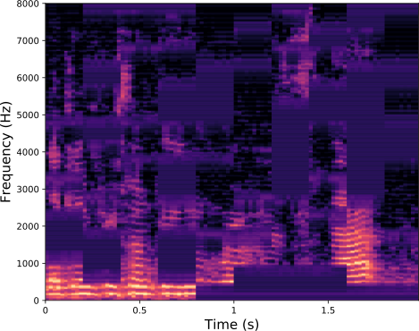

class: middle, center <!--- https://katex.org/docs/supported.html#macros ---> $$ \global\def\myx#1{{\color{green}\mathbf{x}\_{#1}}} $$ $$ \global\def\myxa#1{{\color{green}\mathbf{x}\_{#1}^{(a)}}} $$ $$ \global\def\myza#1{{\color{green}\mathbf{z}\_{#1}^{(a)}}} $$ $$ \global\def\myxv#1{{\color{purple}\mathbf{x}\_{#1}^{(v)}}} $$ $$ \global\def\myzv#1{{\color{purple}\mathbf{z}\_{#1}^{(v)}}} $$ $$ \global\def\myzav#1{{\color{brown}\mathbf{z}\_{#1}^{(av)}}} $$ $$ \global\def\myzds#1{{\color{brown}\mathbf{z}\_{#1}^{(av)}}} $$ $$ \global\def\mywav{{\color{brown}\mathbf{w}^{(av)}}} $$ $$ \global\def\myw{{\color{brown}\mathbf{w}}} $$ $$ \global\def\mys#1{{\color{green}\mathbf{x}\_{#1}}} $$ $$ \global\def\myS#1{{\color{green}\mathbf{X}\_{#1}}} $$ $$ \global\def\myz#1{{\color{brown}\mathbf{z}\_{#1}}} $$ $$ \global\def\myztilde#1{{\color{brown}\tilde{\mathbf{z}}\_{#1}}} $$ $$ \global\def\myhnmf#1{{\color{brown}\mathbf{h}\_{#1}}} $$ $$ \global\def\myztilde#1{{\color{brown}\tilde{\mathbf{z}}\_{#1}}} $$ $$ \global\def\myu#1{\mathbf{u}\_{#1}} $$ $$ \global\def\mya#1{\mathbf{a}\_{#1}} $$ $$ \global\def\myv#1{\mathbf{v}\_{#1}} $$ $$ \global\def\mythetaz{\theta\_\myz{}} $$ $$ \global\def\mythetax{\theta\_\myx{}} $$ $$ \global\def\mythetas{\theta\_\mys{}} $$ $$ \global\def\mythetaa{\theta\_\mya{}} $$ $$ \global\def\bs#1{{\boldsymbol{#1}}} $$ $$ \global\def\diag{\text{diag}} $$ $$ \global\def\mbf{\mathbf} $$ $$ \global\def\myh#1{{\color{purple}\mbf{h}\_{#1}}} $$ $$ \global\def\myhfw#1{{\color{purple}\overrightarrow{\mbf{h}}\_{#1}}} $$ $$ \global\def\myhbw#1{{\color{purple}\overleftarrow{\mbf{h}}\_{#1}}} $$ $$ \global\def\myg#1{{\color{purple}\mbf{g}\_{#1}}} $$ $$ \global\def\mygfw#1{{\color{purple}\overrightarrow{\mbf{g}}\_{#1}}} $$ $$ \global\def\mygbw#1{{\color{purple}\overleftarrow{\mbf{g}}\_{#1}}} $$ $$ \global\def\neq{\mathrel{\char`≠}} $$ .boite-garde[ # Audiovisual speech representation learning applied to emotion recognition .center[.bold[Samir Sadok] .small_sam.gray_sam[(CentraleSupélec, IETR (UMR CNRS 6164), France)]] ] <!--<hr />--> .center.width-7[] .grid[ .kol-1-6[ .left.width-180[] .left.width-40[] .left.width-120[] ] .kol-2-3[ .small[ *Rapporteurs avant soutenance :*<br> Slim Ouni .gray_sam.small_sam[(Professeur à l’Université de Lorraine - LORIA)]<br> Dominique Vaufreydaz .gray_sam.small_sam[(Professeur à l’Université Grenoble Alpes - LIG)] *Composition du Jury :* <br> Céline Hudelot .gray_sam.small_sam[(Professeure à CentraleSupélec - MICS)]<br> Slim Essid .gray_sam.small_sam[(Professeur à Télécom Paris - IPP - LTCI)]<br> Slim Ouni .gray_sam.small_sam[(Professeur à l’Université de Lorraine - LORIA)]<br> Dominique Vaufreydaz .gray_sam.small_sam[(Professeur à l’Université Grenoble Alpes - LIG)] *Dir. de thèse :* Renaud Séguier .gray_sam.small_sam[(Professeur à CentraleSupélec - IETR)] <br> *Encadrant de thèse :* Simon Leglaive .gray_sam.small_sam[(Maître de conférences à CentraleSupélec - IETR)] <br> ] ] .kol-1-6[ .right.width-65[] .left.width-40[] .right.width-65[] ] ] ??? - Slide 1: "Bonjour à tous ! Aujourd'hui, je suis ravi de vous présenter ma thèse intitulée 'Apprentissage de Représentation Audiovisuelle de la Parole Appliqué à la Reconnaissance des Émotions'." --- class: middle, partZERO-slide, center count: false # Introduction .vspace[ ] <!--<div class="w3-container w3-green w3-center w3-small" style="width:1%">0%</div>--> ??? - Slide 2: "Sans plus tarder, passons à l'introduction de ma thèse. Je vais aborder le contexte et le cadre de mes recherches." --- class: context-slide, middle <!--## Context of the thesis--> .center[ <video controls width="1000"> <source src="videos/context.mp4" type="video/mp4"> </video> ] ??? La vidéo débute... - Nous avons tous vécu au moins une fois dans notre vie professionnelle l'étape cruciale qu'est l'entretien d'embauche. - Cependant, au fil des années, cet exercice a subi une transformation majeure pour s'adapter à la nouvelle technologie, prenant la forme d'entretiens à distance par vidéo. - Dans ce scénario, imaginez notre jeune candidat qui passe son premier entretien virtuel. Il répond aux questions les unes après les autres jusqu'à être confronté à une question difficile et inattendue, déclenchant des réponses physiologiques telles qu'une accélération du rythme cardiaque et de la transpiration, ainsi que des réponses psychologiques comme l'anxiété et le stress. - Ces signaux, malheureusement, plongent le candidat dans la détresse, le faisant perdre le contrôle de son entretien. - Maintenant, envisageons l'intervention d'un coach digital, fruit de la collaboration entre Centraleselec et Randstad. - Cet outil surveille le candidat tout au long de son entretien, ajustant son assistance en fonction de son état émotionnel et de stress, visant à restaurer sa confiance et à améliorer sa gestion de l'entretien. - Cet outil digital constitue l'un des objectifs de notre collaboration fructueuse, qui a donné naissance à plusieurs thèses de recherche, dont la mienne que je vais vous présenter aujourd'hui. --- ## Automatic emotion recognition To guarantee the tool's effectiveness, it is essential to **accurately recognize the emotions** likely to disrupt the interview process. .center[ .center.width-50[] ] .alert-sam[My work falls within the field of .bold[affective computing], which encompasses the development of technologies that can accurately recognize, interpret, and respond to human emotional states. This thesis considers and focuses on the *recognition* part.] --- exclude: true ## A brief history - Many researchers attempt to measure different aspects of emotion covering broad areas, noticeably in **Human-Computer Interaction**. history .grid[ .kol-1-2[ .center.width-90[] ] .kol-1-2[ .vspace[ ] .left.boite-gauche[ Most researched categories are: - neuroimaging, - automatic nervous system, - facial expression, - and speech. ] ] ] --- ## Applications of affective computing .center[Affective computing has gained popularity due to its .bold[wide range of application domains].] .vspace[] .center.grid[ .kol-1-4[ **Social media** .center.width-50[] ] .kol-1-4[ **Healthcare** .center.width-50[] ] .kol-1-4[ **Education** .center.circle.width-50[] ] .kol-1-4[ **Automotive** .center.circle.width-80[] ] ] .center.grid[ .kol-1-4[ ] .kol-1-4[ **Entertainment** .center.circle.width-50[] ] .kol-1-4[ **Marketing** .center.width-50[] ] ] .alert-sam[.citation_color[R. W. Picard et al., (2001)] believe that affective computing is the key to promoting and advancing the development of .bold[human-centric AI].] .credit[Picard, R. W., Vyzas, E., & Healey, J. (2001). Toward machine emotional intelligence: Analysis of affective physiological state. IEEE transactions on pattern analysis and machine intelligence, 23(10), 1175-1191.] --- ## Emotion recognition system .italic.center[ How can an .bold[effective] automatic emotion recognition system be developed? ] According to .citation_color[Pantic et al., (2005)], an ideal emotion recognition system should encompass *five fundamental functionalities*: <br> .grid[ .kol-1-3[ .left.small.boite[ - Multimodality; - Robustness and accuracy; - Generality; - Sensitivity to dynamics; - And contextual awareness. ] ] .kol-2-3[ .center.width-100[] ] ] <br> .alert[By encompassing these .bold[five functionalities], an emotion recognition system can significantly enhance its effectiveness in real-world applications.] .credit[Pantic, M., Sebe, N., Cohn, J. F., & Huang, T. (2005, November). Affective multimodal human-computer interaction. In Proceedings of the 13th annual ACM international conference on Multimedia (pp. 669-676).] --- ## Emotion recognition pipeline based on supervised learning .center[ The pipeline for emotion recognition using deep learning can be summarized in .bold[**five steps**]. ] .center.width-100[] --- count: false ## Emotion recognition pipeline based on supervised learning .center[ The pipeline for emotion recognition using deep learning can be summarized in .bold[**five steps**]. ] .center.width-80[] .boite[ (i) *Collecting* and *preprocessing* diverse data, including audio, video, or text samples that exhibit various emotions. ] --- count: false ## Emotion recognition pipeline based on supervised learning .center[ The pipeline for emotion recognition using deep learning can be summarized in .bold[**five steps**]. ] .center.width-80[] .boite[ (ii) The next step is *feature extraction*: Mel-Frequency Cepstral Coefficients and pitch for audio and facial landmarks for video are extracted. ] --- count: false ## Emotion recognition pipeline based on supervised learning .center[ The pipeline for emotion recognition using deep learning can be summarized in .bold[**five steps**]. ] .center.width-80[] .boite[ (iii) Then comes the choice of *the deep learning architecture*: Convolutional Neural Networks (CNNs), Recurrent Neural Networks (RNNs) or Transformers. ] --- count: false ## Emotion recognition pipeline based on supervised learning .center[ The pipeline for emotion recognition using deep learning can be summarized in .bold[**five steps**]. ] .center.width-80[] .boite[ (iv) *Training phase* involves feeding the model with input features and corresponding labeled emotions, enabling it to adjust its internal parameters to *minimize prediction errors*. ] --- count: false ## Emotion recognition pipeline based on supervised learning .center[ The pipeline for emotion recognition using deep learning can be summarized in .bold[**five steps**]. ] .center.width-80[] .boite[ (v) *Model evaluation* is conducted using a separate test dataset, assessing *various metrics* such as accuracy, precision, recall, and F1-score in the case of a classification task. ] --- exclude: false ## Supervised learning .center[The majority of speech emotion recognition methods rely on **supervised learning**.] .grid[ .kol-1-2[ .center.width-50[] .center.small[Emotion Recognition with .bold[deep neural network] <br> .small[Fayek et al., (2017)]] ] .kol-1-2[ .medium[ The model is a *fully supervised* deep learning system .small[(Fayek et al., 2017)], trained using <u>IEMOCAP</u> dataset: - **12** hours of English speech annotated in emotion; - **10** Actors: 5 male and 5 female; - **Four emotions**: anger, happiness, sadness and neutral. - **7532** utterances. .boite-90[Accuracy is *64.8%*. <br>Human performance for the same test dataset is *64.0%*.] ] ] ] .alert[While supervised learning has been quite successful in emotion recognition, it has .bold[limitations].] .credit[ Fayek, H. M., Lech, M., & Cavedon, L. (2017). Evaluating deep learning architectures for speech emotion recognition. Neural Networks, 92, 60-68. <br> Busso, C., et al. (2008). IEMOCAP: Interactive emotional dyadic motion capture database. Language resources and evaluation, 42, 335-359. ] ??? - J'ai examiné un exemple d'un des premiers modèles de réseau de neurones profonds pour la reconnaissance des émotions à partir de la parole audio. C'est un système entièrement supervisé, ce qui implique l'utilisation d'une base de données annotée en émotions. À cet effet, ils ont utilisé IEMOCAP, un jeu de données comprenant 12 heures et 7100 phrases. En termes d'évaluation, le modèle atteint une précision de 64%. Pour mieux comprendre cette métrique, comparons-la aux performances humaines sur la même base de test, où ces derniers atteignent 62%. Entre guillemets, ce modèle surpasse l'humain. Bien que ces résultats soient remarquables, le paradigme d'apprentissage supervisé présente des limites, que nous analyserons par la suite. Avant cela, intéressons-nous d'abord à l'origine de ces limitations, à savoir l'ambiguïté des émotions. --- exclude: false count: true ## Ambiguity of emotions .tiny.citation_color[(Tran et al., 2022)] .center[ The representation of emotions inherently carries .bold[ambiguity].] The *source* corresponds to the person expressing emotions, the *message* includes their verbal and non-verbal cues, and the *recipient* interprets this message. .center.width-50[] .boite[ The subjectivity in emotion perception is evident when annotators disagree on perceived emotions, especially when emotions are not strongly expressed. ] .credit[ Tran et al. (2022). L’ambiguite dans la representation des emotions: etat de l’art des bases de donnees multimodales, Conference Extraction et Gestion de Connaissances.] ??? - Premièrement, cela peut provenir de la source, car les émotions sont souvent complexes et pas toujours faciles à comprendre, même pour la personne qui les ressent. - Deuxièmement, l'ambiguïté peut être présente dans le message lui-même, qui utilise différents moyens (verbaux et non verbaux) pour exprimer des émotions, rendant l'interprétation difficile. - Troisièmement, l'ambiguïté peut se produire au niveau du destinataire, où les gens peuvent interpréter différemment le même message émotionnel. --- exclude: false ## Limitations of supervised methods A significant concern is the potential for unfair outcomes stemming from biases in both the .bold[data] and the .bold[model]. .center.width-80[] Real-world datasets inherently contain *biases* due to the finite nature of the collected data. .boite[ When we train models using standard supervised learning techniques, they tend to lack robustness to shifts in the data distribution .small.citation_color[(Vapnik, 1999)]. ] --- exclude: true count: false ## Limitations of supervised methods - A significant concern is the potential for unfair outcomes stemming from biases in both the .bold[data] and the .bold[model]. .grid.center[ .kol-1-2[ .boite-notrans[ In terms of data ] ] .kol-1-2[ .boite-trans[ In terms of model ] ] ] .small-vspace[ ] .grid[ .kol-1-2[ .center.width-100[] ] .kol-1-2[ <style type="text/css"> .tg {border-collapse:collapse;border-color:#ccc;border-spacing:0;} .tg td{background-color:#fff;border-color:#ccc;border-style:solid;border-width:0px;color:#333; font-family:Arial, sans-serif;font-size:18px;overflow:hidden;padding:10px 5px;word-break:normal;} .tg th{background-color:#f0f0f0;border-color:#ccc;border-style:solid;border-width:0px;color:#333; font-family:Arial, sans-serif;font-size:18px;font-weight:normal;overflow:hidden;padding:10px 5px;word-break:normal;} .tg .tg-2t70{border-color:#ffffff;font-size:18px;text-align:center;vertical-align:middle} .tg .tg-2t71{border-color:#ffffff;font-size:18px;text-align:center;vertical-align:middle} .tg .tg-y6or{color:#6EA4BA;font-size:10px;font-style:italic;text-align:center;vertical-align:middle} </style> <table class="tg"> <thead> <tr> <th class="tg-2t70">Emotion database</th> <th class="tg-2t70">Natural emotions</th> <th class="tg-2t70">Large</th> <th class="tg-2t70">Standardized</th> <th class="tg-2t70">Real-world emotion</th> </tr> </thead> <thead <tr> <td class="tg-2t70">Simulated</font></td> <td class="tg-2t71">☐</td> <td class="tg-2t71">☑</td> <td class="tg-2t71">☑</td> <td class="tg-2t71">☐</td> </tr> <tr> <td class="tg-y6or" colspan="5">created by trained speakers reading the same text with different emotions</td> </tr> </tbody> </table> ] ] .credit[Abbaschian et al. (2021), Deep learning techniques for speech emotion recognition, from databases to models, Sensors.] --- exclude: true count: false ## Limitations of supervised methods - A significant concern is the potential for unfair outcomes stemming from biases in both the .bold[data] and the .bold[model]. .grid.center[ .kol-1-2[ .boite-notrans[ In terms of data ] ] .kol-1-2[ .boite-trans[ In terms of model ] ] ] .small-vspace[ ] .grid[ .kol-1-2[ .center.width-100[] ] .kol-1-2[ <style type="text/css"> .tg {border-collapse:collapse;border-color:#ccc;border-spacing:0;} .tg td{background-color:#fff;border-color:#ccc;border-style:solid;border-width:0px;color:#333; font-family:Arial, sans-serif;font-size:18px;overflow:hidden;padding:10px 5px;word-break:normal;} .tg th{background-color:#f0f0f0;border-color:#ccc;border-style:solid;border-width:0px;color:#333; font-family:Arial, sans-serif;font-size:18px;font-weight:normal;overflow:hidden;padding:10px 5px;word-break:normal;} .tg .tg-2t70{border-color:#ffffff;font-size:18px;text-align:center;vertical-align:middle} .tg .tg-2t71{border-color:#ffffff;font-size:18px;text-align:center;vertical-align:middle} .tg .tg-y6or{border-color:#ffffff;font-size:18px;font-weight:bold;text-align:center;vertical-align:middle} </style> <table class="tg"> <thead> <tr> <th class="tg-2t70">Emotion database</th> <th class="tg-2t70">Natural emotions</th> <th class="tg-2t70">Large</th> <th class="tg-2t70">Standardized</th> <th class="tg-2t70">Real-world emotion</th> </tr> </thead> <thead <tr> <td class="tg-2t70">Simulated</font></td> <td class="tg-2t71">☐</td> <td class="tg-2t71">☑</td> <td class="tg-2t71">☑</td> <td class="tg-2t71">☐</td> </tr> <tr> <td class="tg-2t70">Semi-simulated</font></td> <td class="tg-2t71">☑</td> <td class="tg-2t71">☑</td> <td class="tg-2t71">☐</td> <td class="tg-2t71">☐</td> </tr> <tr> <td class="tg-y6or" colspan="5">made by asking people or actors to read a scenario containing various emotions </td> </tr> </tbody> </table> ] ] .credit[Abbaschian et al. (2021), Deep learning techniques for speech emotion recognition, from databases to models, Sensors.] --- exclude: true count: false ## Limitations of supervised methods - A significant concern is the potential for unfair outcomes stemming from biases in both the .bold[data] and the .bold[model]. .grid.center[ .kol-1-2[ .boite-notrans[ In terms of data ] ] .kol-1-2[ .boite-trans[ In terms of model ] ] ] .small-vspace[ ] .grid[ .kol-1-2[ .center.width-100[] ] .kol-1-2[ <style type="text/css"> .tg {border-collapse:collapse;border-color:#ccc;border-spacing:0;} .tg td{background-color:#fff;border-color:#ccc;border-style:solid;border-width:0px;color:#333; font-family:Arial, sans-serif;font-size:18px;overflow:hidden;padding:10px 5px;word-break:normal;} .tg th{background-color:#f0f0f0;border-color:#ccc;border-style:solid;border-width:0px;color:#333; font-family:Arial, sans-serif;font-size:18px;font-weight:normal;overflow:hidden;padding:10px 5px;word-break:normal;} .tg .tg-2t70{border-color:#ffffff;font-size:18px;text-align:center;vertical-align:middle} .tg .tg-2t71{border-color:#ffffff;font-size:18px;text-align:center;vertical-align:middle} .tg .tg-y6or{border-color:#ffffff;font-size:18px;font-weight:bold;text-align:center;vertical-align:middle} </style> <table class="tg"> <thead> <tr> <th class="tg-2t70">Emotion database</th> <th class="tg-2t70">Natural emotions</th> <th class="tg-2t70">Large</th> <th class="tg-2t70">Standardized</th> <th class="tg-2t70">Real-world emotion</th> </tr> </thead> <thead <tr> <td class="tg-2t70">Simulated</font></td> <td class="tg-2t71">☐</td> <td class="tg-2t71">☑</td> <td class="tg-2t71">☑</td> <td class="tg-2t71">☐</td> </tr> <tr> <td class="tg-2t70">Semi-simulated</font></td> <td class="tg-2t71">☑</td> <td class="tg-2t71">☑</td> <td class="tg-2t71">☐</td> <td class="tg-2t71">☐</td> </tr> <tr> <td class="tg-2t70">Natural</font></td> <td class="tg-2t71">☑</td> <td class="tg-2t71">☐</td> <td class="tg-2t71">☐</td> <td class="tg-2t71">☑</td> </tr> <tr> <td class="tg-y6or" colspan="5">extracted from TV shows, YouTube videos, call centers, etc. </td> </tr> </tbody> </table> ] ] .credit[Abbaschian et al. (2021), Deep learning techniques for speech emotion recognition, from databases to models, Sensors.] --- exclude: true count: false ## Limitations of supervised methods - A significant concern is the potential for unfair outcomes stemming from biases in both the .bold[data] and the .bold[model]. .grid.center[ .kol-1-2[ .boite-trans[ In terms of data ] ] .kol-1-2[ .boite-notrans[ In terms of model ] ] ] .vspace[ ] .grid[ .small.kol-1-2[ Real-world datasets inherently contain *biases* due to the finite nature of the collected data. .boite[ When we train models using standard supervised learning techniques, they tend to lack robustness to shifts in the data distribution .small.citation_color[(Vapnik, 1999)]. ] - While excelling in specific training data, this model may *overfit* and *degrade* significantly in real-world scenarios. ] .kol-1-2[ .center.width-100[] ] ] .credit[Vapnik, V. N., (1999), An overview of statistical learning theory, IEEE transactions on neural networks, 10 5, 988–999.] --- exclude: false ## Deep representation learning .center[We need **unsupervised** or **self-supervised** methods that can learn to unveil the **underlying structure** of the data without or with few ground-truth labels.] .vspace[ ] .kol-1-2[ .center.width-100[] .center.small[Unsupervised learning of speech representations: <br> .bold[VRNN] .small[Baruah et al., (2022)]] ] .kol-1-2[ .small[ .bold[Variational RNN] (VRNN) is a **generative model** that uses MFCC as the input speech representation. <!-- - *10 min* of labeled data: WER = 4.6%;--> <!-- - *10 h* of labeled data: WER = 2.4%.--> .boite-90[ It achieves *68%* performance on the <u>IEMOCAP</u> database. Outperforming both human and supervised methods. ] ]] .vspace[ ] .grid[ .alert-90[Deep generative models have emerged as promising approaches.] ] .credit[Baruah, M., & Banerjee, B. (2022). Speech emotion recognition via generation using an attention-based variational recurrent neural network. Proc. Interspeech 2022, 4710-4714.] ??? - So there is a need to go towards less supervised methods, which can learn to unveil the underlying structure of the data without or with few ground-truth labels. - You have on this figure the result of a method called genesis that basically also performs semantic image segmentation but in an unsupervised manner. - It addresses the task by learning a hierarchical generative model of 3D scenes. By performing inference with this generative model, it is possible to decompose the image of a 3D scene into its constitutive components. - This is an example showing that deep latent variable generative models are promising approaches for unsupervised learning. --- class: middle, center, partZERO-slide count: false # Deep generative models .vspace[ ] .boite[<div class="w3-container w3-green w3-center w3-small" style="width:20%">20%</div>] --- ## Contributions Our contributions can be summarized in **three main parts**: .center.grid[ .kol-1-3[ <!--.small[We present a weakly supervised approach to disentangle pitch from formants within the source-filter model]--> .center.bold[ Source-filter variational autoencoder <br> .small.gray[(Speech Communication, 2023)] ] <br> .center.width-100[] ] .kol-1-3[ <!--.small[Designed to learn structured audiovisual representations across distinct latent spaces (joint vs. specific modality and static vs. dynamic)]--> .center.bold[ A multimodal dynamical variational autoencoder <br> .small.gray[(Neural Networks, 2024)] ] <br> .center.width-100[] ] .kol-1-3[ <!--.small[Unlike the original MAE, which works with raw data (e.g., pixels in images), our approach takes compact and discrete representations.]--> .bold[ A vector quantized masked autoencoder <br> .small.gray[(SASB ICASSP Workshop, 2023 - arXiv:2305.03568)] ] .center.width-95[] ] ] <br> .alert[ All three contributions share a common methodology centered around generative models. ] .credit[ Sadok, S., Leglaive, S., Girin, L., Alameda-Pineda, X., & Séguier, R. (2023). Learning and controlling the source-filter representation of speech with a variational autoencoder. Speech Communication, 148, 53-65. <br> Sadok, S., Leglaive, S., Girin, L., Alameda-Pineda, X., & Séguier, R. (2024). A multimodal dynamical variational autoencoder for audiovisual speech representation learning. Neural Networks, 106120. <br> Sadok, S., Leglaive, S., & Séguier, R. (2023). A vector quantized masked autoencoder for audiovisual speech emotion recognition. arXiv preprint arXiv:2305.03568. <br> Sadok, S., Leglaive, S., & Séguier, R. (2023). A vector quantized masked autoencoder for audio speech emotion recognition. IEEE ICASSP 2023 Workshop on Self-Supervision in Audio, Speech and Beyond (SASB). ] ??? Nos contributions se résument en trois parties, chacune représentée par une couleur. - Chaque contribution est concrétisée par un article publié, soit dans un journal scientifique tel que Speech Communication ou Neural Networks, soit lors dans une conférence internationale comme Face and Gesture. - L'élément central de ces contributions est axé sur les modèles génératifs. --- ## Generative modeling of structured high-dimensional data .center[**High-dimensional data** $\myx{} \in \mathbb{R}^d$ such as natural images or speech signals exhibit some form of **regularity**, preventing their dimensions from varying independently.] <br> .center.width-90[] .center[From a **generative perspective**, this regularity suggests that there exists a smaller dimensional **latent variable** $\myz{} \in \mathbb{R}^\ell$ that generated $\myx{} \in \mathbb{R}^d$, $\ell \ll d$.] .credit[Picture credits: <a href="https://fr.freepik.com/photos-gratuite/heureuse-fille-aux-cheveux-boucles-fait-signe-pouce-air-demontre-son-soutien-son-respect-quelqu-sourit-agreablement-atteint-objectif-souhaitable-porte-t-shirt-blanc-isole-mur-jaune_11932454.htm#query=black%20woman%20face&position=2&from_view=search">wayhomestudio</a> on Freepik. ] ??? - When developing generative models for high-dimensional data such as natural images or speech signals, we can exploit the fact we are dealing with highly-structured data. - Take for instance the image of someone’s face. Even if it contains millions of dimensions, millions of pixels, there are strong correlations between these dimensions, suggesting that face images actually live in a much lower-dimensional manifold. - For instance, a face is symmetric so you cannot apply transformations on the left part of the face independently of the right part. - For a speech signal, it’s the same, you have a harmonic structure that comes from the vibration of the vocal folds for instance, and this induces correlations between different frequency bins. You also have temporal correlations. - From a generative perspective, this regularity suggests that there exists a smaller dimensional latent variable ‘z’ from which the observed high-dimensional data ‘x’ was generated. --- ## Latent-variable generative modeling .small-vspace[ ] .center.width-80[] <!--$$ \hspace{1cm} \underbrace{p\_\theta(\myx{}) = \int p\_\theta(\myx{} |\myz{}) p(\myz{}) d\myz{}}\_{\text{model distribution}} \hspace{.25cm} \approx \hspace{-.5cm} \underbrace{\vphantom{\int}p^{\star}(\myx{})}\_{\text{true data distribution}} $$--> - Generative modeling consists in estimating the parameters $\theta$ so that $p\_\theta(\myx{}) \approx p^\star(\myx{})$ according to some measure of fit, for instance the Kullback-Leibler (KL) divergence. - When the model includes a deep neural network, we obtain a **deep generative model**. ??? - This is how we enter the world of generative modeling with latent variables. - The goal of generative modeling is to approximate the true data distribution p*(x) with a model distribution p_\theta(x). - Usually, the true data distribution is unknown but we have access to a dataset of samples that are assumed to be independent and identically drawn from p*(x). - In latent variable models, the model distribution p_theta is defined by marginalizing the joint distribution ‘x’ and ‘z’. - p(z) is the prior over the latent vector and p(x|z) is the conditional likelihood, which indicates how the observed data are generated from the latent vector. - Generative modeling then consists in estimating the parameters theta to make the model distribution as close as possible to the true data distribution, according to some measure of fit. - For instance, if we take Kullback-Leibler divergence between p* and p_\theta, this is equivalent to maximum likelihood estimation. - When the generative model corresponds to a deep neural network, we obtain a deep latent variable generative model. --- ## The variational autoencoder (VAE) .tiny[(Kingma and Welling, 2014; Rezende et. al., 2014)] .grid[ .center.kol-3-5[ .center.kol-2-5[ .underline[Prior] $ \small p(\myz{}) = \mathcal{N}(\myz{}; \mathbf{0}, \mathbf{I})$ ] .center.kol-3-5[ .underline[Generative model] $ \small p\_\theta(\myx{} | \myz{}) = \mathcal{N}\left( \myx{}; \boldsymbol{\mu}\_\theta(\myz{}), \boldsymbol{\Sigma}\_\theta(\myz{}) \right) $ .small-vspace[ ] ] .center.width-90[] ] .center.kol-2-5[ .underline[Inference model] $\small q\_\phi(\myz{} | \myx{}) = \mathcal{N}\left( \myz{}; \boldsymbol{\mu}\_\phi(\myx{}), \boldsymbol{\Sigma}\_\phi(\myx{}) \right) \\\\$ <br> The inference model approximates the intractable exact posterior distribution $\displaystyle p\_\\theta(\myz{} | \myx{}) = \frac{p\_\theta(\myx{} | \myz{})p(\myz{})}{\int p\_\theta(\myx{} | \myz{})p(\myz{})d\myz{}}$ ] ] .small-nvspace[ ] $\footnotesize \hspace{.5cm} \boldsymbol{\Sigma}\_\phi(\myx{}) = \diag\\{ \mathbf{v}\_\phi(\myx{})\\} \qquad\qquad \boldsymbol{\Sigma}\_\theta(\myz{}) = \diag\\{ \mathbf{v}\_\theta(\myz{}) \\}$ .credit[ D.P. Kingma and M. Welling (2014), Auto-encoding variational Bayes, ICLR. <br> D.J. Rezende et al., (2014) Stochastic backpropagation and approximate inference in deep generative models, ICML. ] ??? - Today, we will focus on deep generative models based on the variational autoencoder. - In the original VAE introduced in 2014, the prior over ‘z’ is Gaussian, with zero mean and identity covariance. - If we are dealing with continuous observations, we typically assume a Gaussian model for the conditional distribution of ‘x’ given ‘z’. The parameters of this Gaussian are provided by a deep neural network called the decoder, which takes as input ‘z’. We usually further assume that the covariance matrix is diagonal. - We are also usually interested in performing inference, meaning computing the posterior distribution of ‘z’ given ‘x’. For VAEs, we cannot compute this quantity analytically because the normalizing constant is intractable. We cannot compute this integral here because we have a nonlinear relationship between ‘z’ and ‘x’, which precisely corresponds to the decoder network. - We thus need to introduce an inference model, that approximates the exact posterior. It is typically defined as a Gaussian distribution, whose parameters are provided by a second neural network called the encoder, which takes as input the observed data ‘x’. We denote by phi the parameters of this network. --- class: middle The VAE parameters are estimated by maximizing the **evidence lower bound** (ELBO) .small[(Neal and Hinton, 1999; Jordan et al. 1999)] defined by: $$\begin{aligned} \mathcal{L}(\phi, \theta) &= \underbrace{\mathbb{E}\_{q\_\phi(\myz{} | \myx{})} [\ln p\_\theta(\myx{} | \myz{})]}\_{\text{reconstruction accuracy}} - \underbrace{D\_{\text{KL}}(q\_\phi(\myz{} | \myx{}) \parallel p(\myz{}))}\_{\text{regularization}} \le \ln p_\theta(\mathbf{x}). \end{aligned} $$ .reset-column[ ] .credit[ R.M. Neal and G.E. Hinton (1999). A view of the EM algorithm that justifies incremental, sparse, and other variants, in M. I. Jordan (Ed.), .italic[Learning in graphical models]. <br> M.I. Jordan et al. (1999). An introduction to variational methods for graphical models, Machine Learning.] ??? - Now the question is how do we estimate the model parameters, the parameters of the encoder and decoder networks? - Inspired by variational inference techniques, the VAE parameters are estimated by maximizing a quantity called the evidence lower bound and defined by this equation. - You see that we have in this expression all the quantities that we’ve defined before, the prior, the generative model, and the inference model. So this is the expression that you should use when implementing a VAE. But, to understand what is going on here, it is easier to look at this equivalent decomposition of the ELBO. We have the intractable log-marginal likelihood and the KL divergence between the inference model and the intractable exact posterior distribution. - For estimating the model parameters theta, ideally, we would like to maximize the log-marginal likelihood. But this quantity is analytically intractable due to non-linearities. So instead we maximize the ELBO, and because the KL here is always non-negative we see that we are actually maximizing a lower bound of the log-marginal likelihood, which makes sense right? - For estimating the inference model parameters, we also maximize the ELBO and because the log-marginal likelihood does not depend on phi, we see from that this is equivalent to minimizing the KL divergence between the inference model and the intractable exact posterior distribution, which also makes sense! --- class: center, middle A trained VAE can be used for **generation**, **transformation**, and **downstream tasks**. .center.width-85[] .credit[ S. Sadok et al., (2023). Learning and controlling the source-filter representation of speech with a variational autoencoder. Speech Communication, 148, 53-65. ] --- class: center, middle Ideally, the learned representation should be **disentangled** .small[(Higgins et al., 2018)], i.e., somehow easy to relate to independent and interpretable high-level characteristics of the data. .alert[Supervised learning from disentangled representations has been found to be more sample-efficient, more robust, and better in terms of generalization .small[(van Steenkiste et al., 2019)].] .left.credit[ .small-vspace[ ] I. Higgins et al., (2018) Towards a definition of disentangled representations. arXiv preprint arXiv:1812.02230. <br> S. van Steenkiste et al., (2019) Are disentangled representations helpful for abstract visual reasoning?, NeurIPS. ] ??? - Once the VAE is trained, it can be used for generating new data, by sampling the prior over ‘z’ and mapping the samples through the decoder. - We can also use the encoder to analyze some input data and then apply transformations on the latent representation before resynthesis with the decoder. Or we can use the latent representation provided by the encoder to solve downstream tasks. - Ideally, the latent representation learned by the VAE should be disentangled. Loosely speaking, it means that it should somehow be easy to relate the representation to independent and interpretable characteristics of the data. - Having a disentangled representation is of course interesting when we want to transform data because we can easily control high-level characteristics, but it is also interesting for solving supervised downstream tasks. - In particular, learning from a disentangled representation instead of the raw data has been found to be more efficient in terms of the amount of labeled data we need, more robust to perturbations of the data, and better in terms of generalization. --- exclude: true ## Unsupervised and self-supervised learning - These methods present a promising alternative to the fully supervised learning approach, especially when labeled data is limited or prone to bias .italic.center[Unsupervised and self-supervised methods usually involve a separate two-step learning process:] .grid[ .kol-1-2[ .center.width-90[] ] .kol-1-2[ <br> In the first step, the model learns to represent the data in an unsupervised or self-supervised way, through a **pretext task** that does not require .bold[labeling data]. ] ] .small-vspace[ ] .alert[This approach enables the model to extract relevant features from the vast amount of unlabeled data available.] --- exclude: true ## Unsupervised and self-supervised learning - These methods present a promising alternative to the fully supervised learning approach, especially when labeled data is limited or prone to bias .italic.center[Unsupervised and self-supervised methods usually involve a separate two-step learning process:] .grid[ .kol-1-2[ .center.width-90[] ] .kol-1-2[ <br> In the second step, the model transfers the knowledge learned in the first step to an **downstream task**, such as .bold[emotion recognition]. ] ] .alert[The concept of leveraging information from the unsupervised or self-supervised phase to improve performance in the supervised learning stage has become more widely recognized.] --- class: middle exclude: true .center.width-100[] --- class: middle, partONE-slide count: false .center[ # Part I ## Learning and controlling the source-filter representation of speech with a variational autoencoder ] .vspace[ ] .boite[<div class="w3-container w3-green w3-center w3-small" style="width:30%">30%</div>] <!--.center.small[.url[https://samsad35.github.io/site-sfvae/]]--> .credit[Sadok, S., Leglaive, S., Girin, L., Alameda-Pineda, X., & Séguier, R. (2023). Learning and controlling the source-filter representation of speech with a variational autoencoder. Speech Communication, 148, 53-65.] ??? --- class: method-sf-vae-slide ## Introduction <br> .center.width-100[] .vspace[ ] .boite[We started by examining the representation of audio speech in the **latent space of a VAE**.] ??? Nous avons débuté notre exploration par la parole audio, en nous penchant précisément sur la représentation de celle-ci dans l'espace latent d'un VAE. --- class: method-sf-vae-slide count: false ## Introduction <br> .center.width-100[] .vspace[ ] .boite[We use the **encoder** to obtain a compressed latent representation of the VAE, .gray[which is then used by the decoder to reconstruct the data].] ??? - Pour clarifier, via l'encodeur, nous inférons une représentation latente compressée du VAE, que le décodeur utilise ensuite pour reconstruire les données. --- class: method-sf-vae-slide count: false ## Introduction <br> .center.width-100[] .vspace[ ] .boite[.gray[We use the encoder to obtain a compressed latent representation of the VAE], which is then used by the **decoder** to reconstruct the data.] --- class: method-sf-vae-slide count: false ## Introduction <br> .center.width-100[] ??? - Notre focus se porte particulièrement sur ce vecteur latent. Plongeons-nous dans cette représentation latente ! --- class: method-sf-vae-slide count: false ## Introduction <br> .center.width-100[] ??? - Cependant, malheureusement, mis à part le fait que cette variable latente suit a priori une distribution gaussienne standard, nous ne savons rien sur la structure de cet espace latent ni sur la manière dont les facteurs de variation y sont organisés. --- class: method-sf-vae-slide count: false ## Introduction <br> .center.width-100[] .vspace[ ] .boite[Learning and controlling the **source-filter representation of speech** with a variational autoencoder.] ??? - Dans cette contribution, nous proposons une approche simple visant à structurer l'espace latent en plusieurs sous-espaces, chacun encodant un seul facteur de variation. --- class: middle, method-sf-vae-slide count: false .center.width-100[] ??? - Voici la méthode globale proposée ; nous allons maintenant explorer chaque bloc constituant cette méthode. --- class: partONE-slide-top ## ➀ Complete VAE model .center.width-70[] .boite[ .grid[ .center.kol-1-5[ .underline[Prior] $ \small p(\myz{}) = \mathcal{N}(\myz{}; \mathbf{0}, \mathbf{I})$ ] .center.kol-2-5[ .underline[Generative model] $ \small p\_\theta(\mys{} | \myz{}) = \mathcal{N}\_c\left( \mys{}; \mathbf{0}, \text{diag}\left\\{ \mathbf{v}\_\theta(\myz{}) \right\\} \right) $ ] .center.kol-2-5[ .underline[Inference model] $ \small q\_\phi(\myz{} | \mys{}) = \mathcal{N}\left( \myz{}; \boldsymbol{\mu}\_\phi(\mys{}), \text{diag}\left\\{ \mathbf{v}\_\phi(\mys{}) \right\\} \right)$ ] ] .grid[ .kol-1-2[ Trained on about *25 hours* of unlabeled speech at 16 kHz, maximizing the evidence lower-bound. ] .kol-1-2[ .center.width-90[] ] ] ] .credit[We use simple feed-forward fully-connected neural networks.] ??? - Le premier bloc consiste à pré-entraîner de manière non supervisée un VAE sur 25 heures de parole audio, en maximisant ELVO que nous avons vu précédemment. --- class: partONE-slide-top ## ➁ Automatically-labeled voiced speech trajectories .center.width-70[] .center.width-90[] - Using Soundgen .small[(Anikin, 2019)], an artificial speech synthesizer based on the source-filter model, we generate datasets $\\{\mathcal{D}\_i\\}\_{i=0}^3$ containing a **few-seconds of speech power spectra** where only one factor $f\_i$ varies, all other factors $\\{f\_j\\}\_{j \neq i}$, being arbitrarily fixed. - All examples in $\mathcal{D}\_i$ are **automatically-labeled** with $f_i$ (this is an input of soundgen). .credit[A. Anikin (2019), Soundgen: An open-source tool for synthesizing nonverbal vocalizations, Behavior Research Methods.] ??? - Une fois le VAE pré-entraîné, nous avons généré quatre trajectoires synthétiques à l'aide de l'outil de synthèse SoundGen. - Chaque trajectoire générée représente une variation unique d'un seul facteur, les autres facteurs étant fixés. - Un point commun à ces quatre trajectoires est leur durée très limitée, de quelques secondes seulement, contrairement au VAE qui est entraîné sur 25 heures. - Un autre aspect important est que ces trajectoires sont automatiquement étiquetées en termes de fréquence du pitch et des formants, ce que nous exploiterons par la suite. --- class: partONE-slide-top ## ➂ Source-filter latent subspace learning .center.width-70[] .vspace[ ] - .bold[Intuition]: Because one single factor $f_i$ varies in $\mathcal{D}\_i$, we expect the corresponding latent vectors to live in a **lower-dimensional manifold of the original latent space $\mathbb{R}^K$**. - We assume this manifold to be a **linear subspace** characterized by its semi-orthogonal basis matrix $\mathbf{U}\_i \in \mathbb{R}^{K \times M\_i}, M\_i < K$. ??? Après l'obtention des quatre trajectoires synthétiques, l'attention se porte sur leurs représentations latentes. - Une intuition prévalente est que, puisqu'un seul et unique facteur de variation varie dans chaque trajectoire, leur représentation latente est supposée vivre dans un espace de dimension réduite par rapport à l'espace latent du VAE. - L'objectif principal à présent est d'identifier ces sous-espaces de faible dimension au sein de l'espace latent du VAE. - À cet effet, on suppose que les sous-espaces associés à chaque facteur de variation sont des espaces linéaires caractérisés par une matrice de projection U (semi-orthogonale). --- class: partONE-slide-top ## ➂ Source-filter latent subspace learning .center.width-70[] For each element $\mys{} \in \mathcal{D}\_i$, we plot $\mathbb{E}\_{q\_\phi(\myz{}|\mys{})}[ \mathbf{U}\_i^\top\myz{} ] = \mathbf{U}\_i^\top \boldsymbol{\mu}\_{\phi}(\mys{}) \in \mathbb{R}^{M\_i}$ $\footnotesize (M\_i = 3)$. .kol-1-4[ .width-115[] ] .kol-1-4[ .width-100[] ] .kol-1-4[ .width-100[] ] .kol-1-4[ .width-100[] ] .nvspace[ ] .grid[ .kol-1-4[ .caption[$f\_0$ latent trajectory] ] .kol-1-4[ .caption[$f\_1$ latent trajectory] ] .kol-1-4[ .caption[$f\_2$ latent trajectory] ] .kol-1-4[ .caption[$f\_3$ latent trajectory] ] ] --- class: middle, partONE-slide-top exclude: true ## Source-filter latent subspace learning - .bold[Intuition]: Because one single factor $f_i$ varies in $\mathcal{D}\_i$, we expect the corresponding latent vectors to live in a **lower-dimensional manifold of the original latent space $\mathbb{R}^K$**. .small-vspace[ ] .center.width-80[] .small-vspace[ ] - We assume this manifold to be a **linear subspace** characterized by its semi-orthogonal basis matrix $\mathbf{U}\_i \in \mathbb{R}^{K \times M\_i}, M\_i < K$, computed by solving .grid[ .kol-1-2[ $$ \scriptsize \underset{\mathbf{U} \in \mathbb{R}^{K \times M\_i}}{\min}\,\, \mathbb{E}\_{\color{Gray}{\hat{q}\_\phi^{(i)}(\myz{})}}\left[ \parallel \myz{} - \mathbf{U}\mathbf{U}^\top\myz{} \parallel\_2^2 \right], \qquad s.t.\,\, \mathbf{U}^\top \mathbf{U} = \mathbf{I}. \qquad \tiny \color{Gray} \hat{q}\_\phi^{(i)}(\myz{}) = \mathbb{E}\_{{p}^{(i)}(\mys{})}[q\_\phi(\myz{} | \mys{})] = \frac{1}{\\#\mathcal{D}\_i} \sum\limits\_{\mys{n} \in \mathcal{D}\_i} q\_\phi(\myz{} | \mys{n}). $$ ]] - As in principal component analysis (PCA), a closed-form solution is obtained by an eigendecomposition of a symmetric positive semi-definite matrix. --- class: partONE-slide-top ## ➃ Weakly-supervised piecewise linear regression .center.width-80[] .vspace[ ] Making now use of the labels in $\mathcal{D}\_i$, we learn a piecewise-linear regression model $\mathbf{g}\_{\eta\_i} : \mathbb{R}\_+ \mapsto \mathbb{R}^{M\_i}$ from the value $y \in \mathbb{R}\_+$ of the factor $f\_i$ to the data coordinates $\mathbf{U}\_i^\top \myz{}$ in the latent subspace. <!--$$ \eta\_i = \underset{\eta}{\argmin}\,\, \mathbb{E}\_{\hat{q}\_\phi^{(i)}(\myz{}, y)}\Big[ \lVert \mathbf{g}\_{\eta}(y) - \mathbf{U}\_i^\top \myz{} \rVert\_2^2 \Big], $$--> <!--.medium[ where $\hat{q}\_\phi^{(i)}(\myz{}, y) = \displaystyle \int q\_\phi(\myz{} | \mys{}) \hat{p}^{(i)}(\mys{}, y) d\mys{}$ and $\hat{p}^{(i)}(\mys{}, y)$ is the empirical distribution of $\mathcal{D}\_i = \\{ (\mys{n}, y\_n) \\}\_n$. ]--> --- class: middle, partONE-slide-top ## Disentangled speech manipulation in the VAE latent space .center.width-100[] We can transform a speech spectrum by analyzing it with the VAE encoder, applying the following **affine transformation**, and resynthesizing with the VAE decoder: $$ {\color{magenta}\tilde{\mathbf{z}}} = {\color{blue}\mathbf{z}} - \mathbf{U}\_i \mathbf{U}\_i^\top {\color{blue}\mathbf{z}} + \mathbf{U}\_i {\color{magenta}\mathbf{g}\_{\eta\_i}(y)}. $$ .alert[This transformation allows us to .bold[move only in the subspace associated with] $f\_i$, leaving other source-filter factors unchanged thanks to the orthogonality property.] --- class: middle, center, partONE-slide-top .small-nvspace[ ] .grid[ .kol-1-3[ .center.width-90[] <audio controls style="height: 20px;" src="audio/pitch_encdec_WG.wav"></audio> ] .kol-1-3[ .center.width-90[] <audio controls style="height: 20px;" src="audio/pitch_trans_increase_WG.wav"></audio> ] .kol-1-3[ .center.width-85[] <audio controls style="height: 20px;" src="audio/pitch_trans_decrease_WG.wav"></audio> ] ] .grid[ .kol-1-3[ .center.width-90[] <audio controls style="height: 20px;" src="audio/pitch_trans_gaussian_WG.wav"></audio> ] .kol-1-3[ .center.width-90[] <audio controls style="height: 20px;" src="audio/pitch_trans_sine_WG.wav"></audio> ] .kol-1-3[ .center.width-85[] <audio controls style="height: 20px;" src="audio/pitch_trans_whisper_WG.wav"></audio> ] ] .caption[(top left) reconstructed w/o modification, (bottom right) whispered spectrogram obtained with ${\tilde{\mathbf{z}}} = {\mathbf{z}} - \mathbf{U}\_i \mathbf{U}\_i^\top {\mathbf{z}}$, (other) various $f_0$ transformations. Waveforms are obtained from the spectrograms using WaveGlow .small[(Prenger et al., 2019)]. ] --- class: method-sf-vae-slide ## Summary .vspace[ ] .boite-garde[ .grid[ .kol-1-2[ .center.width-100[] ] .left.kol-1-2[ .small-vspace[ ] <!--This contribution introduced a simple the proposed method employs a self-supervised paradigm based method for **learning** and **controlling** low-level factors of variation in latent space of VAE.--> We **analyze** and **control** the latent space of a VAE from the perspective of the source-filter model of speech production, which can be beneficial for various applications in *speech analysis*, *transformation*, and *synthesis*. ] ] .center[.bold[Emotions], where **dynamical** and **multimodal** aspects are important, are not encoded in these low-level factors of variation. This limitation will be addressed in our second contribution.] ] --- class: middle, partTWO-slide count: false .center[ # Part Ⅱ ## Multimodal dynamical VAE (MDVAE) ] .vspace[ ] .boite[<div class="w3-container w3-green w3-center w3-small" style="width:50%">50%</div>] .credit[Sadok, S., Leglaive, S., Girin, L., Alameda-Pineda, X., & Séguier, R. (2024). A multimodal dynamical variational autoencoder for audiovisual speech representation learning. Neural Networks, 106120.] ??? - Nous avons récemment examiné une méthode basée sur un autoencodeur variationnel pour apprendre des représentations désentrelacées permettant de contrôler des facteurs de variation de bas niveau tels que le pitch ou les formants. - Malheureusement, ces facteurs de bas niveau n'intègrent pas les émotions. - Ces dernières sont des facteurs de haut niveau où l'aspect multimodal et dynamique est crucial. - C'est ce que nous allons explorer dans notre deuxième contribution. --- class: partTWO-slide-top .small-nvspace[ ] .center[Over the past few years, the VAE has been extended in many ways, including for processing **dynamical** .bold[or] **multimodal** data.] <!-- .small[(Girin et al., 2021)] .small[(Suzuki et al., 2016; Wu and Goodman, 2018; Hsu and Glass, 2018; Shi et al., 2019, Sutter et al., 2021)] --> .center.width-90[] .alert[We will present a multimodal .bold[and] dynamical VAE (MDVAE) applied to unsupervised audiovisual speech representation learning.] .credit[ .vspace[ ] L. Girin et al., (2021). Dynamical variational autoencoders: A comprehensive review, Foundations and Trends in Machine Learning. <br> M. Suzuki et al., (2017). Joint multimodal learning with deep denerative models, ICLR Workshop. <br> M. Wu and N. Goodman (2018). Multimodal generative models for scalable weakly-supervised learning, NeurIPS. <br> W.-N. Hsu and J. R. Glass (2018). Disentangling by partitioning: A representation learning framework for multimodal sensory data, arXiv preprint arXiv:1805.11264. <br> Y. Shi et al., (2019). Variational mixture-of-experts autoencoders for multi-modal deep denerative models, NeurIPS. <br> T. Sutter et al., (2020). Multimodal generative learning utilizing Jensen-Shannon divergence, NeurIPS. <br> T. Sutter et al., (2021). Generalized Multimodal ELBO, ICLR. ] ??? - In its original form, the VAE was proposed for static and unimodal data. Since 2014, it has been extended in many ways. - In particular, dynamical VAEs have been proposed for sequences of observed and latent vectors. The generative model in DVAEs takes into account temporal dependencies between these variables. - Multimodal VAEs have also been proposed to account for multiple observed modalities, but only for static data, data that are not sequential. - In this talk, we are going to discuss a multimodal and dynamical VAE, so a generative model of multimodal data, where the different modalities correspond to sequential data. - It will be applied to unsupervised audiovisual speech representation learning. --- class: partTWO-slide-top ## Audiovisual (AV) speech latent factors .grid[ .kol-1-2[ .small-vspace[ ] .center[ <video controls width="500"> <source src="videos/W016_happy_level2_004.mp4" type="video/mp4"> </video> ] ] .kol-1-2[ - *Static*, **shared** (AV): e.g., speaker's identity and global emotional state; - *Dynamical*, **shared** (AV): e.g., lip movements, phonemic information .small[(part of)]; - *Dynamical*, **modality-specific** (V): e.g., other facial movements and head pose; - *Dynamical*, **modality-specific** (A): e.g., pitch variations, phonemic information .small[(part of)]. ] ] .alert[We seek to learn a multimodal dynamical VAE that disentangles these AV speech latent factors: dynamical and modality-specific, dynamical and audiovisual, static and audiovisual.] .credit[Video credits: K. Wang et al., (2020) MEAD: A large-scale audio-visual dataset for emotional talking-face generation, ECCV.] ??? - This is the type of data we are interested in modeling: expressive audiovisual speech. - Let's try to reason about the latent factors involved in the generation of such an audiovisual speech sequence. - First, we have the speaker’s identity and global emotional state, which correspond to static information that does not evolve with time at the utterance level, and it is shared between the two modalities. Indeed, I cannot be happy Simon with the audio modality and angry Robert with the visual modality, right? - We also have dynamical latent factors shared between the two modalities, so audiovisual factors that vary with time. This typically corresponds to the phonemic information that is accessible from the lip movements. - And then we have dynamical latent factors that are specific to each modality. Visual-only dynamical factors include for instance facial movements that are not related to the mouth, and the head pose. Audio-only dynamical factors include pitch variations and the phonemic content that is not defined by the jaw and lip configuration. - Our objective is to learn a multimodal and dynamical VAE than can disentangle these audiovisual-speech latent factors in an unsupervised manner. ---- Pitch variations and facial expressions can be seen as modality-specific dynamic factors that vary around a "center value" defined by the speaker's identity and global emotional state. --- class: middle, partTWO-slide-top ## Notations .grid[ .grid[ .kol-1-5[ ] .kol-1-5[ $\myxa{} \in \mathbb{R}^{d\_a \times T}$ ] .kol-3-5[ **Observed** dynamical <font color="#258212">audio</font> data ] ] .small-nvspace[ ] .grid[ .kol-1-5[ ] .kol-1-5[ $\myxv{} \in \mathbb{R}^{d\_v \times T}$ *** ] .kol-3-5[ **Observed** dynamical <font color="#800080">visual</font> data ] ] .grid[ .kol-1-5[ ] .kol-1-5[ $\myw \in \mathbb{R}^{\ell\_w}$ ] .kol-3-5[ **Latent** static <font color="brown">audiovisual</font> data ] ] .small-nvspace[ ] .grid[ .kol-1-5[ ] .kol-1-5[ $\myzav{} \in \mathbb{R}^{\ell\_{av} \times T}$ ] .kol-3-5[ **Latent** dynamical <font color="brown">audiovisual</font> data ] ] .small-nvspace[ ] .grid[ .kol-1-5[ ] .kol-1-5[ $\myza{} \in \mathbb{R}^{\ell\_a \times T}$ ] .kol-3-5[ **Latent** dynamical <font color="#258212">audio</font> data ] ] .small-nvspace[ ] .grid[ .kol-1-5[ ] .kol-1-5[ $\myzv{} \in \mathbb{R}^{\ell\_v \times T}$ ] .kol-3-5[ **Latent** dynamical <font color="#800080">visual</font> data ] ] ] ??? - First, some notations. - We denote by ‘x’ the observed audiovisual speech sequence, x^a for the audio modality and x^v for the visual modality. Both correspond to sequences of observed feature vectors, with capital T frames. - For the audio speech, we extract features from the power spectrogram of the signal, and for the visual speech, we extract features from the preprocessed face images. I will come back to this feature extraction later. - When we add a subscript to the variable, it denotes one particular vector of the sequence, at a given time frame. - Then we have a set of latent unobserved vectors. ‘w’ and z^av encode the audiovisual information, so what is shared between the two modalities. ‘w’ is a static vector while z^av is a sequence of vectors. - z^a and z^v are both sequences of latent vectors, that are assumed to encode modality-specific dynamical information, z^a for the audio modality, and z^v for the visual one. --- class: center, middle, partTWO-slide-exp ## MDVAE generative model .center.width-60[] --- class: middle, partTWO-slide-top count: false ## MDVAE generative model .grid[ .center[Defining the generative model amounts to defining the **joint distribution** of all variables:] .center.width-80[] ] $$ \hspace{-.75cm} \small p\_\theta\left(\myxa{}, \myxv{}, \myzav{},\myza{},\myzv{}, \myw{}\right) = p\_\theta\left(\myxa{} \mid \myzav{},\myza{},\myw{}\right) p\_\theta\left(\myxv{} \mid \myzav{}, \myzv{}, \myw{}\right) p\_\theta\left(\myzav{}\right)p\_\theta\left(\myza{}\right) p\_\theta\left(\myzv{}\right)p\_\theta\left(\myw{}\right) $$ .grid[ .alert-90[By *structuring the dependencies* between these variables we hope to learn the desired disentangled representation of audiovisual speech in an *unsupervised* manner.] ] <!-- This is the so-called inductive bias .small[ (Locatello et al., 2019)] that we exploit.--> <!--.credit[F. Locatello et al., A sober look at the unsupervised learning of disentangled representations and their evaluation, Journal of Machine Learning Research, 2020.]--> ??? - Now we have to define the generative model of MDVAE, which amounts to defining the joint distribution of all the variables we have just defined. And more precisely, we have to define the structure of the dependencies between these variables. - In doing so we will define what people call an inductive bias, and we hope that this inductive bias will allow us to learn the desired disentangled representation in an unsupervised manner. - The temporal dependencies that we are going to define are largely inspired by the disentangled sequential autoencoder of Li and Mandt. DSAE is a specific instance of a DVAE for unimodal data, and what we propose with MDVAE can be seen as a multimodal extension of DSAE. --- class: center, middle, partTWO-slide-exp ## MDVAE inference model .center.width-60[] --- class: middle, partTWO-slide-top count: false ## MDVAE inference model .center[As in the standard VAE, we need to define an inference model that approximates the posterior.] .center.width-70[] The inference model $q\_\phi\left(\myzav{},\myza{},\myzv{}, \myw{} \mid \myxa{}, \myxv{}\right)$ decomposes as the product of four terms: $$\hspace{-.5cm} q\_\phi\left(\myw{} \mid \myxa{}, \myxv{}\right) \times q\_\phi\left(\myzav{}\mid \myxa{}, \myxv{}, \myw{} \right) \times q\_\phi\left(\myza{} \mid \myxa{}, \myzav{}, \myw{}\right) \times q\_\phi\left(\myzv{} \mid \myxv{}, \myzav{}, \myw{}\right)$$ .alert[Using D-separation in Bayesian networks .small[(Geiger et al., 1990)], it is possible to analyze how the observed and latent variables depend on each other.] .credit[Geiger, D., Verma, T., & Pearl, J. (1990). d-separation: From theorems to algorithms. In Machine Intelligence and Pattern Recognition (Vol. 10, pp. 139-148). North-Holland.] ??? - As in the standard VAE, the inference model is an approximation of the intractable exact posterior distribution. - An important methodological point: it’s not because the exact posterior is intractable that we cannot look at the structure of the exact posterior dependencies. Actually, using the chain rule, the Bayesian network we’ve defined and a principle called D-separation, we can analyze the exact posterior dependencies, meaning how the observed and latent variables depend on each other given the observations. - You will find an extensive discussion of D-separation in the context of DVAEs in the review paper of Laurent Girin and colleagues. --- class: middle, partTWO-slide-top ## ELBO As in the standard VAE, learning the MDVAE generative and inference model parameters consists in maximizing the **ELBO** $$\begin{aligned} \mathcal{L}(\phi, \theta) &= \underbrace{\mathbb{E}\_{q\_\phi\left(\myzav{},\, \myza{},\, \myzv{},\, \myw{} \mid \myxa{},\, \myxv{}\right)} \left[\ln p\_\theta\left(\myxa{}, \myxv{} \mid \myzav{},\myza{},\myzv{}, \myw{}\right)\right]}\_{\text{reconstruction accuracy}} \\\\ & \hspace{1cm} - \underbrace{D\_{\text{KL}}\left(q\_\phi\left(\myzav{},\myza{},\myzv{}, \myw{} \mid \myxa{}, \myxv{}\right) \Big\lvert\Big\rvert\, p\_\\theta\left(\myzav{},\myza{},\myzv{}, \myw{}\right) \right)}\_{\text{regularization}}. \end{aligned} $$ Developing this expression is a bit more complicated than with the standard VAE, but there is no fundamental difficulty. ??? - As in the standard VAE, learning the MDVAE generative and inference model parameters consists in maximizing the evidence lower bound. - We have more variables than with a standard VAE so it may look a bit scary, but actually there is no fundamental difficulty in developing this expression and implementing it to train the model. - Don’t worry, I will spare you the details :) --- class: partTWO-slide-top ## Two-stage training with the VQ-VAE .center[Standard VAEs tend to reconstruct **blurred outputs**, which is particularly true for image data.] .center.width-100[] .center[We exploit the VQ-VAE .small[(van den Oord et al., 2017)] to **train the MDVAE in two stages**.] .credit[A. van den Oord et al., (2017) Neural discrete representation learning, NeurIPS.] ??? - We are actually using a two-stage training approach for MDVAE. - Standard VAEs have a shortcoming, they tend to reconstruct blurred outputs, which is particularly true for image data. - Many approaches have been proposed to solve this problem, and one of them is the vector-quantized VAE, which learns discrete instead of continuous latent representations. - In the VQ-VAE, the continuous latent vector is quantized using a discrete codebook before being fed to the decoder network. The codebook is jointly learned with the network architecture. - This quantization step provides generated outputs of much better quality, so we will exploit this VQ-VAE to train the MDVAE in two stages. ---- - The VQ-VAE extends the standard VAE by using a **discrete codebook** of latent codes. - The decoder is fed with the codebook vector that is closest to the continuous latent vector $\myz{}$ in terms of Euclidean distance; **the latent vector $\myz{}$ is quantized**. - The codebook is jointly learned with the network architecture, using **vector quantization**. - In practice, each input data vector is represented by a grid of codebook vectors. For instance, assume a codebook of size 512 and an encoder that outputs a grid of $32 \times 32$ latent vectors. The decoder can output $512^{32\times 32} \approx 10^{2774}$ distinct images. --- class: partTWO-slide-top .center[The first stage consists in learning a **VQ-VAE** independently for **each modality** and without **temporal modeling**.] .center.width-100[] .small-vspace[ ] .alert[Rather than learning the MDVAE on the raw audio and visual data, we will use the intermediate compressed representation of the VQ-VAEs before quantization.] ??? - The first stage consists in learning a VQ-VAE independently for each modality, and without any temporal modeling. It means that all the frames in each modality are assumed independent. - Then, rather than learning the MDVAE on the raw audio and visual data, we are going to use the intermediate compressed representation of the VQ-VAEs before quantization. - So we are learning audiovisual speech features in an unsupervised manner, using the VQ-VAE. - What is nice here is that we can go from the raw data to the features with the encoder, but also from the features to the raw data with the decoder. --- class: partTWO-slide-top .center[ In the second stage, **we learn the MDVAE model "inside" the frozen VQ-VAE**. This 2-stage training improves the reconstruction quality, but it also speeds up the training of the MDVAE model. ] .center.width-100[] .small-vspace[ ] .alert[The disentanglement between static versus dynamical and modality-specific versus audiovisual latent speech factors occurs during this second training stage.] ??? - The second stage consists in learning the MDVAE model somehow inside the VQ-VAEs. - We have here the pre-trained VQ-VAEs that are frozen and fed with the raw audiovisual speech data. - We learn the MDVAE model using the intermediate compressed representations provided by the VQ-VAEs, before quantization. - This not only improves the reconstruction quality but also speeds up the training. - The disentanglement between static versus dynamical, and modality-specific versus audiovisual latent factors occurs during this second training stage. This is because the VQ-VAEs were learned independently on each modality and without temporal modeling. --- class: partTWO-slide-exp ## MEAD: Multi-view Emotional Audio-visual Dataset .tiny[(K. Wang et al., 2020)] .grid[ .kol-1-2[ .vspace[ ] We use about **30 hours of audiovisual emotional speech** from the MEAD dataset - 48 speakers .small[(different for training and testing)] - 8 different emotions - 3 levels of intensity - 7 views .small[(we keep only the frontal view)] <!--Preprocessing:--> <!-- - Face images are cropped, resized (64x64 resolution) and aligned.--> ] .kol-1-2[ .center.width-100[] .center[.small[Image credits: (K. Wang et al., 2020)]] ] ] <!--.small-nvspace[--> <!--]--> <!-- - STFT parameters for computing power spectrograms are chosen such that the audio frame rate is equal to the visual frame rate (30 fps).--> .credit[ K. Wang et al., (2020). MEAD: A Large-scale Audio-visual Dataset for Emotional Talking-face Generation, ECCV ] ??? - For all experiments, we train the MDVAE model on the MEAD dataset. - It contains about 30 hours of audiovisual emotional speech. - It features 48 speakers speaking with 8 different emotions at 3 levels of intensity. - There are multiple views but we only keep the frontal one. - The speakers in the training and testing sets are different. - Face images are cropped, resized to a quite low resolution of 64x64 pixels, and aligned. - We compute the audio speech spectrograms such that the audio frame rate is equal to the visual frame rate. - The audio and visual data are synchronized. --- class: partTWO-slide-top .center.grid[ .boite[ .titre_mdvae[Qualitative analysis] <object hspace="80">.small_sam[Audiovisual speech emotion recognition]</object> ] ] .center.width-50[] .alert[We will present qualitative results obtained by reconstructing an audiovisual speech sequence using some of the latent variables from another sequence.] ??? - The first set of experiments consists in studying what high-level characteristics of the audiovisual speech data are encoded in w, z^av, z^a and z^v. - To do so, we will present qualitative results obtained by reconstructing an audiovisual speech sequence using some of the late variables from another sequence. - For instance, in this figure we have an input sequence that we map through the MDVAE encoder to infer all the latent variables. And with the decoder we reconstruct the sequence but using the dynamical audiovisual latent variable z^av taken from another sequence. - The goal is then to look at what characteristics of the original sequence have been modified by this swapping. --- class: middle, center, partTWO-slide-top .center.grid[ .boite[ .titre_mdvae[Qualitative analysis] <object hspace="80">.small_sam[Audiovisual speech emotion recognition]</object> ] ] .grid[ .kol-1-2[ We transfer $\myzav{}$ from the central sequence in red to the surrounding sequences. .center[ <video controls width="380" loop autoplay muted> <source src="demo/mosaic/z_av.mp4" type="video/mp4"> </video> ] Lip and jaw movements are transfered. ] .kol-1-2[ We transfer $\myzv{}$ from the central sequence in red to the surrounding sequences. .center[ <video controls width="380" loop autoplay muted> <source src="demo/mosaic/z_visual.mp4" type="video/mp4"> </video> ] Head and eyelid movements are transfered. ] ] ??? - Ok so here on the left, we transfer the dynamical audiovisual latent variable z^av from the central sequence in red to the surrounding ones. - We observe that the lip and jaw movements become synchronized for all sequences, but other facial movements are not synchronized. For instance, the central speaker moves his head, which is not the case with the surrounding speakers. We also see that some speakers blink but not all of them, and when they blink it is not synchronized. - On the right, we transfer the dynamical visual-only latent variable z^v from the central sequence to the surrounding ones. - This time, we see that all facial movements but the ones related to the audio speech are transferred. Indeed, the lip and jaw movements are not synchronized anymore, but all speakers move their head similarly, and we can see some eyelid movements that are also synchronized. --- class: partTWO-slide-top .center.grid[ .boite[ .titre_mdvae[Qualitative analysis] <object hspace="80">.small_sam[Audiovisual speech emotion recognition]</object> ] ] .center[Interpolation of the static audiovisual latent variable $\myw{}$] .grid[ .kol-1-2[ .center[ <video controls width="380" loop autoplay muted> <source src="demo/interpolation/identity_interpolation.mp4" type="video/mp4"> </video> ] .caption[Same emotion, different identities.] ] .kol-1-2[ .center[ <video controls width="380" loop autoplay muted> <source src="demo/interpolation/emotions_interpolation.mp4" type="video/mp4"> </video> ].caption[Same identity, different emotions.] ] ] $$ \small \hspace{-.5cm} p\_\theta\left(\myxv{} \mid \myzav{},\myzv{},\myw{}\right) = \prod\_{t=1}^T p\_\theta\left(\myxv{t} \mid \myzav{t},\myzv{t},\boxed{\tilde{\myw{}}\_t}\right), \hspace{.3cm} \tilde{\myw{}}\_t = \alpha\_t \myw{} + (1- \alpha\_t) \myw{}', \hspace{.3cm} \alpha\_t = (T-t)/(T-1). $$ ??? - So what we can do is interpolate between the static audiovisual latent variable ‘w’ of two different sequences. - Here on the left we take two sequences with the same emotion but different identities, and we interpolate on ‘w’, keeping the other latent variables of the left sequence unchanged. We observe a smooth transition from one identity to another. - On the right here we do the same but this time the two input sequences have the same identity and different emotions. - The transition is again smooth, and what is also important to note is that we do not alter the dynamical aspects of the sequence. --- class: partTWO-slide-top .center.grid[ .boite[ .small_sam[Qualitative analysis] <object hspace="80">.titre_mdvae[Audiovisual speech emotion recognition]</object> ] ] - The qualitative analysis of the latent representations learned by MDVAE suggests that the static audiovisual latent variable $\myw{}$ encodes the speaker's emotion. - We propose to use the **mean vector of the Gaussian inference model** $q\_\phi\left(\myw{} \mid \myxa{}, \myxv{}\right)$ as the input of a **multinomial logistic regression model** trained for emotion classification on the MEAD dataset (8 classes). <!-- - The mean vector is simply obtained by a forward through the encoder network corresponding to $q\_\phi\left(\myw{} \mid \myxa{}, \myxv{}\right)$. --> - We compare the performance of MDVAE with: - .bold[A-DSAE] .small.gray[(Li, Y., & Mandt, S. 2018)] relies on the audio-only inference model $q\_\phi\left(\myw{} \mid \myxa{}\right)$; - .bold[V-DSAE] .small.gray[(Li, Y., & Mandt, S. 2018)] relies on the visual-only inference model $q\_\phi\left(\myw{} \mid \myxv{}\right)$. - .bold[wav2vec] .small.gray[(Schneider et al., 2018)], a self-supervised pre-trained model. - And supervised audiovisual methods (.small[.bold[Mult] .gray[(Tsai et al., 2019)]], .small[.bold[AV-transformer] .gray[(Chumachenko et al., 2022)]]). .credit[Li, Y., & Mandt, S. (2018). Disentangled sequential autoencoder. arXiv preprint arXiv:1803.02991.<br> Schneider, S., Baevski, A., Collobert, R., & Auli, M. (2019). wav2vec: Unsupervised pre-training for speech recognition. arXiv preprint arXiv:1904.05862. <br> Tsai, Y.-H. H., et al. (2019). Multimodal transformer for unaligned multimodal language sequences. In Proceedings of the conference. Association for Computational Linguistics. Meeting (p. 6558). <br> Chumachenko, K. et al. (2022). Self-attention fusion for audiovisual emotion recognition with incomplete data. In International Conference on Pattern Recognition (ICPR) (pp. 2822–2828). ] ??? - The qualitative analysis of the latent representations learned by MDVAE suggests that the static audiovisual latent variable ‘w’ encodes the speaker's emotion. - It is thus natural to try to use this learned representation for emotion recognition. - We propose to use the mean vector of the Gaussian inference model on ‘w’ as the input of a multinomial logistic regression model trained for emotion classification on the MEAD dataset. <!-- - This mean vector is simply obtained by a forward through the encoder network that implements the inference model on w. --> - We compare MDVAE with its two unimodal counterparts: - A-DSAE for DSAE trained on the audio speech. We use the audio-only inference model q(w | x^a) to extract the emotion representation. - V-DSAE for DSAE trained on the visual speech. We use the visual-only inference model q(w | x^v) to extract the emotion representation. --- class: partTWO-slide-top .center.grid[ .boite[ .small_sam[Qualitative analysis] <object hspace="80">.titre_mdvae[Audiovisual speech emotion recognition]</object> ] ] .bold[Configuration 1:] Person-dependent evaluation .kol-1-5[ .boite[ .center.width-100[] ] ] .kol-4-5[ .center.width-100[] ] --- class: partTWO-slide-top count: false .center.grid[ .boite[ .small_sam[Qualitative analysis] <object hspace="80">.titre_mdvae[Audiovisual speech emotion recognition]</object> ] ] .bold[Configuration 1:] Person-dependent evaluation .kol-1-5[ .boite[ .center.width-100[] ] ] .kol-4-5[ .center.width-100[] - With less than **10%** of the labeled data, MDVAE reaches **90%** of its maximal performance. ] --- class: partTWO-slide-top .center.grid[ .boite[ .small_sam[Qualitative analysis] <object hspace="80">.titre_mdvae[Audiovisual speech emotion recognition]</object> ] ] .bold[Configuration 2:] Person-independent evaluation .kol-1-5[ .boite[ .center.width-100[] ] ] .kol-4-5[ .center.width-100[] ] ??? - Dans cette configuration, nous séparons l'information relative à l'identité entre la base de données d'entraînement et la base de test. --- class: partTWO-slide-top <div style="width:100%; text-align: center;"> <table style="width:100%; text-align: center;"> <td> <div style="width:100%; text-align: center;"> <iframe src="https://plotly.com/~sam-sad/23/" frameborder="0" width="800" height="600" allowfullscreen="true" mozallowfullscreen="true" webkitallowfullscreen="true"> </iframe> </div> </td> </table> </div> --- class: partTWO-slide-top count: false .center.grid[ .boite[ .small_sam[Qualitative analysis] <object hspace="80">.titre_mdvae[Audiovisual speech emotion recognition]</object> ] ] .bold[Configuration 2:] Person-independent evaluation .kol-1-5[ .boite[ .center.width-100[] ] ] .kol-4-5[ .center.width-100[] ] --- class: partTWO-slide-top count: false .center.grid[ .boite[ .small_sam[Qualitative analysis] <object hspace="80">.titre_mdvae[Audiovisual speech emotion recognition]</object> ] ] .bold[Configuration 2:] Person-independent evaluation .kol-1-5[ .boite[ .center.width-100[] ] ] .kol-4-5[ .center.width-100[] .center[**Mead Dataset**] ] <!--.credit[Courty, N., Flamary, R., Habrard, A., & Rakotomamonjy, A. (2017). Joint distribution optimal transportation for domain adaptation. Advances in neural information processing systems, 30.]--> --- class: partTWO-slide-top count: false .center.grid[ .boite[ .small_sam[Qualitative analysis] <object hspace="80">.titre_mdvae[Audiovisual speech emotion recognition]</object> ] ] .bold[Configuration 2:] Person-independent evaluation .kol-1-5[ .boite[ .center.width-100[] ] ] .kol-4-5[ .center.width-100[] .center[**Ravdess Dataset** .small.gray[(Livingstone et al. 2018)]] ] ] <!--.credit[Livingstone, S. R., & Russo, F. A. (2018). The Ryerson Audio-Visual Database of Emotional Speech and Song (RAVDESS). PloS one, 13(5), e0196391.]--> --- class: partTWO-slide-exp ## Summary .boite-garde[ .left.kol-1-2[ - We introduced a .bold[multimodal dynamical VAE]. - A key to learn a meaningful representation in the proposed approach is to structure the latent space into different latent variables that disentangle **static**, **dynamical**, **modality-specific** and **modality-common** information. - MDVAE has also been evaluated for *audiovisual facial image denoising*. ] .kol-1-2[ .center.width-100[] ] .vspace[ ] .center[In the next and final contribution, we will take a different approach to learn an audiovisual speech representation in a **self-supervised way**.] ] --- class: partTHREE-slide, middle count: false .center[ # Part Ⅲ ## A vector quantized masked autoencoder ] .vspace[ ] .boite[<div class="w3-container w3-green w3-center w3-small" style="width:75%">75%</div>] ??? - Nous venons d'examiner une approche non supervisée basée sur un autoencodeur variationnel pour apprendre une représentation audiovisuelle de la parole. - Dans cette dernière contribution, nous explorerons une autre approche visant toujours à apprendre une représentation audiovisuelle de la parole, mais cette fois-ci, elle sera entraînée de manière auto-supervisée. --- class: partTHREE-slide-top ## Masked autoencoder - MAE .small.gray[(He et al., 2022)] uses a straightforward approach where it randomly masks patches of the input image and then reconstructs the missing pixels. .grid[ .kol-1-2[ <br> The MAE model is underpinned by two key architectural choices: - **Asymmetric encoder-decoder architecture**; - **High masking ratio**. ] .kol-1-2[ .center.width-100[] .small.center[Figure credit: .gray[(He et al., 2022)]] ] ] .vspace[ ] .center.italic.boite[How to extend the MAE to the learning of an **audiovisual representation of speech**?] .credit[ He, K. et al., (2022). Masked autoencoders are scalable vision learners. IEEE/CVF conference on computer vision and pattern recognition.] --- class: partTHREE-slide-top, middle ## A vector quantized masked autoencoder (VQ-MAE) .alert[ Unlike MAE that rely on the processing of the raw data (e.g., pixels), the proposed method employs a self-supervised paradigm based on <span style="border:1px red solid; padding:3px">.bold[compressed]</span>, <span style="border:1px red solid; padding:3px">.bold[discrete]</span> and <span style="border:1px red solid; padding:3px">.bold[reversible]</span> representations learned by pre-trained vector quantized variational autoencoders.] --- class: partTHREE-slide-top ## A vector quantized masked autoencoder .center.width-100[] --- class: partTHREE-slide-top count: false ## A vector quantized masked autoencoder .center.width-100[] .boite-90[The proposed multimodal self-supervised approach uses the discrete latent representation of two **pre-trained** and **frozen** VQ-VAEs.] --- class: partTHREE-slide-top count: false ## A vector quantized masked autoencoder .center.width-100[] .boite-90[We use the VQ-VAE-audio and VQ-VAE-visual encoders to obtain **compressed** and **quantized** representations.] --- class: partTHREE-slide-top count: false ## A vector quantized masked autoencoder .center.width-100[] .boite-90[The audio and visual quantized representations from the output of the VQ-VAE encoders are divided into **non-overlapping patches** to build discrete tokens.] --- class: partTHREE-slide-top count: false ## A vector quantized masked autoencoder .grid[ .kol-2-3[ .center.width-100[] ] .kol-1-3[ <br> <br> <br> .boite-90[A proportion of the discrete audio and visual tokens is **masked** out, using a **coupled masking** strategy between the two modalities.] ] ] --- class: partTHREE-slide-top count: false ## A vector quantized masked autoencoder .grid[ .kol-2-3[ .center.width-100[] ] .kol-1-3[ <br> .boite-90[The visible audio and visual tokens are replaced with **trainable continuous embedding vectors**, which are fed to the **VQ-MAE-AV encoder**, where we present two strategies based on attention mechanisms to fuse the modalities.] ] ] --- class: partTHREE-slide-top count: false ## A vector quantized masked autoencoder .grid[ .kol-2-3[ .center.width-100[] ] .kol-1-3[ <br> .boite-90[The token-wise representation obtained from the encoder is combined with **mask tokens** and fed to the **VQ-MAE-AV decoder**, which tries to reconstruct the original non-masked discrete audio and visual tokens.] ] ] --- class: partTHREE-slide-top count: false ## A vector quantized masked autoencoder .grid[ .kol-2-3[ .center.width-100[] ] .kol-1-3[ <br> .boite-90[The VQ-MAE-AV model is trained in a self-supervised manner to minimize: - the *cross-entropy loss* between the reconstructed and original tokens; - and *a contrastive loss* between the audio and visual global tokens.] ] ] --- class: partTHREE-slide-exp count: false ## VoxCeleb2 dataset .tiny[(Chung et al. 2018)] To pre-train VQ-MAE-AV, we use the VoxCeleb2 dataset .small[(chung et al., 2018)], which offers a broad range of audiovisual speech data from open-source media, with each video featuring a single speaker. .vspace[ ] .grid[ .kol-1-2[ - We restricted our dataset use to a subset of around **1000 hours of audiovisual speech**, - encompassing 2170 different speakers. - The test set includes about **100 hours of audiovisual speech** data, - with 117 different speakers. ] .kol-1-2[ .center.width-100[] ] ] .credit[Chung, J. S., Nagrani, A., & Zisserman, A. (2018). Voxceleb2: Deep speaker recognition. arXiv preprint arXiv:1806.05622.] --- class: partTHREE-slide-top ## Qualitative results <table style="width:100%; text-align: center;"> <td> <p> <font size="+2">Original</font> </p> <div class="zoom"> </div> </td> <td> <p> <font size="+2">Masked</font> </p> <div class="zoom"> </div> </td> <td> <p> <font size="+2">VQ-MAE-AV-12</font> </p> <div class="zoom"> </div> </td> </table> <table style="width:100%; text-align: center;"> <td> <video id="video_original" style="display: None;" controls autoplay muted loop preload="auto" width="200"> <source src="demos/96/id_4/images-original_ratio-0.0.mp4" type="video/mp4"> Your browser does not support the video tag. </video> </td> <td> <video id="video_masked" style="display: None;" controls autoplay muted loop preload="auto" width="200"> <source src="demos/96/id_4/images-masked_ratio-50.0.mp4" type="video/mp4"> Your browser does not support the video tag. </video> </td> <td> <video id="video_reconstructed" style="display: None;" controls autoplay muted loop preload="auto" width="200"> <source src="demos/96/id_4/images-reconstructed_ratio-50.0.mp4" type="video/mp4"> Your browser does not support the video tag. </video> </td> </table> <center> <div> <label style="margin-left: 0em" > Resolution: </label> <select name="pets" id="resolution_" style="margin-right: 5em" onclick="selectAnimation()"> <option value="96">96</option> <option value="192">192</option> </select> <label class="switch switch-flat" style="margin-left: -1em"> Animation <input id="animation" type="checkbox" onclick="checkAnimation()"/> </label> <label style="margin-left: 3em" > ID: </label> <select name="pets" id="id_" style="margin-right: 5em" onclick="selectAnimation()"> <option value="4">id_4</option> <option value="1">id_1</option> <option value="2">id_2</option> <option value="3">id_3</option> </select> <label id="numberAudio" style="color:#5E77E7;font-size: 20px;opacity: 0.7; margin-left: -1em">audio 50 %</label> <input type="range" id="ratio" value="50" name="volume" min="0" max="100" step="10" oninput="rangeValue.innerText = this.value"> <label id="rangeValue" style="color:#5E77E7;font-size: 20px;opacity: 0.7;">50</label> <label for="ratio" style="color:#5E77E7;font-size: 20px;opacity: 0.7;"> % visual</label> </div> </center> <table style="width:100%; text-align: center;"> <td> <audio id="wav_original" style="width: 200px" controls="controls" preload="none" src="demos/96/id_4/spectrogram-original_ratio-0.0.wav"></audio> <div class="zoom"> </div> </td> <td> <audio id="wav_masked" style="width: 200px" controls="controls" preload="none" src="demos/96/id_4/spectrogram-masked_ratio-50.0.wav"></audio> <div class="zoom">  </div> </td> <td> <audio id="wav_reconstructed" style="width: 200px" controls="controls" preload="none" src="demos/96/id_4/spectrogram-reconstructed_ratio-50.0.wav"></audio> <div class="zoom"> </div> </td> </table> <script type="text/javascript"> </script> <style> .zoom { transition: transform .2s; transform-origin: center; width: 100%; height: 100%; margin: auto auto; } .zoom:hover { -ms-transform: scale(1.5); /* IE 9 */ -webkit-transform: scale(1.5); /* Safari 3-8 */ transform: scale(1.5); filter: brightness(130%); } </style> .credit[Sadok et al., (2023) A vector quantized masked autoencoder for audiovisual speech emotion recognition.] --- class: partTHREE-slide-top ## Audiovisual speech emotion recognition - We compare the **emotion recognition performance** (accuracy and F1-score metrics) of the proposed VQ-MAE-AV model with the performance of several state-of-the-art methods. .center.width-100[] .boite[We evaluate the proposed approaches on *three emotional audiovisual speech databases*. **RAVDESS** (8 emotions), **CREMA-D** (6 emotions) and **eNTERFACE05** (7 emotions).] --- class: partTHREE-slide-top count: false ## Audiovisual speech emotion recognition - We compare the **emotion recognition performance** (accuracy and F1-score metrics) of the proposed VQ-MAEAV model with the performance of several state-of-the-art methods. .center.width-100[] .boite[*Supervised approaches* are listed in the first block of the table.] --- class: partTHREE-slide-top count: false ## Audiovisual speech emotion recognition - We compare the **emotion recognition performance** (accuracy and F1-score metrics) of the proposed VQ-MAEAV model with the performance of several state-of-the-art methods. .center.width-100[] .boite[followed by *unsupervised* or *self-supervised* approaches in the second block.] --- class: partTHREE-slide-top count: false ## Audiovisual speech emotion recognition - We compare the **emotion recognition performance** (accuracy and F1-score metrics) of the proposed VQ-MAEAV model with the performance of several state-of-the-art methods. .center.width-100[] .alert[The experimental results demonstrate the .bold[effectiveness] of the proposed audiovisual self-supervised representation learning technique for SER.] --- class: middle, partZERO-slide count: false .center[ # Conclusion ] .vspace[ ] .boite[<div class="w3-container w3-green w3-center w3-small" style="width:90%">90%</div>] ??? --- class: middle, center .kol-1-2[ .center.width-20[] ] .kol-1-2[ <br><br><br><br><br><br><br><br> .bold[Representation learning] ] --- class: middle, center count: false .kol-1-2[ .center.width-20[] ] .kol-1-2[ <br><br><br><br><br><br><br><br> .bold[Disentangled] representation learning ] --- class: middle, center count: false .kol-1-2[ .center.width-80[] ] .kol-1-2[ <br><br><br><br><br><br><br><br> Incorporating the .bold[dynamical] aspect, ] --- class: middle, center count: false .kol-1-2[ .center.width-80[] ] .kol-1-2[ <br><br><br><br><br><br><br><br> But also the .bold[multimodal] aspect. ] --- class: middle, center count: false .center.width-100[] Developing **generative models** via .bold[unsupervised] or .bold[self-supervised learning]. --- class: middle, center count: false .center.width-100[] Validating the effectiveness of our approaches through both qualitative and quantitative analyses, in particular on .bold[emotion recognition task]. --- class: middle exclude: true # Conclusion We proposed the MDVAE to learn structured representations of multimodal and dynamical data. - .bold[Why?] Collecting labels for every scenario and tasks is intractable, we need **alternatives to supervised learning**. - .bold[How?] **Deep generative** modeling is a powerful **unsupervised** learning paradigm that can be applied to many different types of data, in particular **multimodal** and **sequential data**. We can learn **structured** and **interpretable representations** by **modeling probabilistic dependencies** between observed and latent variables. - .bold[What?] **Various** applications in **audiovisual speech** processing, using **one single model**. --- class: middle # Limitations and future directions .vspace[ ] .center.kol-1-3[ .boite[ **Integrating multidisciplinary insights** .center.width-50[] .small-vspace[ ] Incorporating psychology, neuroscience, and computer science expertise. ] ] .center.kol-1-3[ .boite[ **Context matters** .center.width-45[] Including additional context through other modalities, such as text, can enhance emotion recognition. ] ] .center.kol-1-3[ .boite[ **Improvement of our ongoing research** .center.width-40[] Overcoming technical limitations (increase image resolution, improve audio synthesis ...). ] ] ??? - Emotion recognition systems can significantly .bold[benefit] from an interdisciplinary approach incorporating psychology, neuroscience, and computer science expertise. - Including additional .bold[context through other modalities], such as text .italic[(scene or environmental descriptions)], can enhance emotion recognition. Technical limitations are inherent in our research, often serving as catalysts for improvement. - One persisting limitation throughout this thesis has been the challenge of synthesizing high-quality audio waveforms. - An essential aspect to explore is the adaptability of our methods across diverse tasks. --- class: middle .center.kol-1-3[ .boite[ **Explainability and interpretability** .center.width-40[] The .bold[vulnerability] of ER systems largely stems from the inherent *black-box* nature of the machine learning models. ] ] .center.kol-1-3[ .boite[ **In terms of evaluation** <br> <br> .center.width-40[] <br> The lack of a *universally accepted benchmarking protocol* hinders the fair evaluation of ER systems. ] ] .center.kol-1-3[ .boite[ **In terms of environmental issues** .center.width-40[] Addressing environmental issues related to AI methods requires a multi-faceted approach. ] ] ??? - The .bold[vulnerability] of ER systems largely stems from the inherent .bold[black-box] nature of the machine learning models. - The lack of a .bold[universally accepted benchmarking protocol] hinders the fair evaluation of ER systems. - Collaboration across hardware, software, and policy domains is key to addressing these environmental challenges effectively. <!-- --- class: middle MDVAE effectively combines the audio and visual information in static ($\myw{}$) and dynamical ($\myzav{}$) latent variables: - Talking faces can be synthesized by transfering $\myzav{}$ from one sequence to another, which preserves the speaker's identity, emotional state and visual-only facial movements. - The audio modality provides robstuness with respect to corruption of the visual modality on the mouth region. - The static audiovisual latent variable $\myw{}$ can be used for emotion recognition with few labeled data, and with much better accuracy compared with unimodal baselines. MDVAE is also competitive with a state-of-the-art method based on audiovisual transformers. --> <!-- --- class: middle Extensions and applications of MDVAE include: - audiovisual-consistent data augmentation using $p\_\theta\left(\myzv{}\right)$ and/or $p\left(\myw{}\right)$ for, e.g., automatic speech recognition; - deep speech prior for unsupervised audiovisual speech enhancement .small[(Sadeghi et al., 2020)]; - audiovisual voice conversion, provided we improve the audio speech generative model, e.g., inspiring from RAVE .small[(Caillon and Esling, 2021)]. .credit[M. Sadeghi et al., "Audio-visual speech enhancement using conditional variational auto-encoders", IEEE/ACM Transactions on Audio, Speech and Language Processing, 2020 <br> A. Caillon and P. Esling, "RAVE: A variational autoencoder for fast and high-quality neural audio synthesis", arXiv preprint arXiv:2111.05011, 2021] --> --- class: middle, center count: false # Thank you for your attention! <br> ☻ <!-- .left.footnote[Hopefully, an arXiv preprint on MDVAE will be soon available.] --> --- class: conclusion-slide, middle, center .boite[<div class="w3-container w3-green w3-center w3-small" style="width:100%">100%</div>] <!--###############################################################--> --- class: center, middle, partZERO-slide # Appendix --- class: middle, partOne-slide-appendix ## Source-filter model of .small[(voiced)] speech production .center.width-100[] .alert[ The source-filter model proposed by (Fant, 1970) considers that the production of speech results from the interaction of a .bold[source signal] with a .bold[linear filter]. ] .grid[ .kol-1-2[ .small[ - In voiced speech, the source originates from the vibration of the **vocal folds**. This vibration is characterized by the **fundamental frequency** loosely referred to as the **pitch**. ] ] .kol-1-2[ .small[ - The source signal is modified by the **vocal tract**, which is assumed to act as a **linear filter**. The cavities of the vocal tract give rise to **resonances**, which are called the **formants**. ] ] ] .credit[G. Fant, Acoustic theory of speech production (No. 2), Walter de Gruyter, 1970.] --- class: middle, partOne-slide-appendix .grid[ .kol-1-3[ .center.width-100[] <audio controls src="audio/aeiou.wav"></audio> ] .kol-2-3[ <br> - By moving the speech articulators (tongue, lips, jaw), humans modify the shape of their vocal tract, which results in a change of the formant frequencies. - In a first approximation, humans are able to control the pitch and the formants independently .small[(Fant, 1970; MacDonald et al., 2011)]. <br> .alert-90[ A speech signal is mainly characterized by a .bold[few independent continuous latent factors of variation] corresponding to the .bold[fundamental frequency] $f_0$ and the .bold[formant frequencies] $f_i, i \ge 1$ ] .credit[E. N. MacDonald, Probing the independence of formant control using altered auditory feedback, JASA, 2011.] ] ] --- class: middle, partOne-slide-appendix .grid[ .kol-1-2[ .center.width-100[] ] .kol-1-2[ - We choose $M\_i$ so as to retain 80% of the data variance after projection onto the latent subspaces. It gives $M\_0 = 4, M\_1 = 1, M\_2 = 3, M\_3 = 3$. - We compute the dot product between all pairs of unit vectors in the matrices <br>$\\{\mathbf{U}\_i \in \mathbb{R}^{K \times M\_i}\\}\_{i=0}^3$. - Except for a correlation value of $−0.21$ between $f\_1$ and the 1st component of $f\_2$, all values are below $0.13$ .small[(in absolute value)]. ] ] .alert[This analysis confirms the orthogonality of the source-filter latent subspaces and the disentanglement of the corresponding factors in the VAE latent space. ] ??? - So the dimensions of the latent subspaces that allow us to retain 80 % of the data variance after projection are 4, 1, 3 and 3 for the fundamental and first formant frequencies, which is reasonably small as expected. - In the figure here, we have the dot product between all pairs of unit vectors in the matrices U_i. Except for a correlation value of -0.21 between f1 and the 1st component of f2, all other values are below 0.13 which is quite small. - This confirms that the learned source-filter subspaces are mostly orthogonal and the corresponding factors disentangled in the VAE latent space. --- class: middle, partOne-slide-appendix .center.small[Fundamental and formant frequency manipulation of the vowel /a/ uttered by a female speaker] .center.width-80[] .center.width-60[] --- class: partTWO-slide-appendix exclude: false .center.grid[ .boite[ .small_sam[Qualitative analysis] <object hspace="30">.titre_mdvae[Audiovisual facial image denoising]</object> .small_sam[Audiovisual speech emotion recognition] ] ] - We artificially **corrupt the visual modality** by adding random Gaussian noise on localized regions of the 6 central frames of a 10 frame-long sequence. The **audio modality is unaltered**. .center.width-70[] .small.grid[ - The task is to denoise the visual modality. - We compare MDVAE with two **unimodal baselines** trained on the visual modality only: - .bold[VQ-VAE] .small[(van den Oord et al., 2017)], **no temporal modeling**. - .bold[DSAE] .small[(Li and Mandt, 2018)], same **temporal model** as MDVAE and trained in **two stages** as MDVAE. ] .alert[Denoising is done by simply encoding and decoding the corrupted (audio)visual speech sequence.] .credit[Y. Li and S. Mandt, "Disentangled sequential autoencoder", ICML 2018.] ??? - In this experiment, we artificially corrupt the visual modality by adding random Gaussian noise on localized regions of the 6 central frames of a 10 frame-long sequence. The audio modality is unaltered. For instance, here we corrupt the mouth region. - The task is to denoise the visual modality. - We compare MDVAE with two unimodal baselines trained on the visual modality only. - The VQ-VAE, so not temporal modeling. Actually, it corresponds to the VQ-VAE that we use to obtain the input visual representation of MDVAE. - The DSAE, so it’s the same temporal modal as MDVAE, and it’s trained in two stages as MDVAE, the only difference is that it’s unimodal. - Said differently we are actually doing an ablation study because if you take MDVAE and remove the multimodality you obtain DSAE. If you additionally remove the temporal model you obtain the VQ-VAE. - For all methods, denoising is simply done by encoding-decoding the corrupted visual or audiovisual speech sequence. --- class: middle, black-slide exclude: false .center.width-100[] ??? - So here are some qualitative results obtained when corrupting the mouth region. - The first row corresponds to the original ground-truth sequence, the second row to the noisy sequence, and then we have the results obtained with VQ-VAE, DSAE, and MDVAE. - We see that the reconstruction with the VQ-VAE is quite bad. - When we add a temporal model inside the VQ-VAE using DSAE we obtain much a better reconstruction, but the lip configuration is not consistent with the ground truth. - With MDVAE, the lip configuration is much closer to the ground truth, which is precisely because it’s a multimodal model that leverages the audio modality to reconstruct the visual one. --- class: middle, partTWO-slide-appendix .grid[ .kol-3-5[ .center.width-95[] ] .kol-2-5[ <br> - Results are obtained by averaging over 200 test sequences. - Metrics are computed on the corrupted region. .small-vspace[ ] .alert-90[ The performance gap between MDVAE and the unimodal baselines is larger for the corruption of the mouth region. This is because MDVAE exploits the audio modality.] ] ] ??? - Here we have some quantitative results obtained by averaging over 200 test sequences. On the top, we have results for the corruption of the mouth region, and on the bottom for the eyes region. - We compute two metrics to evaluate the reconstruction quality of the corrupted region only, the peak signal-to-noise ratio and the structural similarity index measure. - The x-axis of each plot corresponds to the noise power. - We see that the MDVAE in red obtains better results than the DSAE in orange and the VQ-VAE in blue. - The performance gap between MDVAE and the two unimodal baselines is much larger for the corruption of the mouth. This is again because MDVAE exploits the audio modality, which is obviously more useful for denoising the mouth than the eyes. --- class: partTWO-slide-appendix ## Handling sequential dependencies with RNNs - Let us take the example of $$p\_\theta\left(\myz{t} \mid \myz{1:t-1} \right) = \mathcal{N}\left(\myz{t}; \boldsymbol{\mu}\_\theta\left(\myz{1:t-1}\right), \diag\left\\{\mathbf{v}\_\theta\left(\myz{1:t-1}\right)\right\\}\right),$$ where $\\{\boldsymbol{\mu}\_\theta, \mathbf{v}\_\theta\\}$ are non-linear functions of $\myz{1:t-1}$ implemented by neural networks. - The sequential dependency of $\myz{t}$ on $\myz{1:t-1}$ can be implemented with an RNN: $$p\_\theta\left(\myz{t} \mid \myz{1:t-1} \right) = \mathcal{N}\left(\myz{t}; \boldsymbol{\mu}\_\theta\left(\myh{t}\right), \diag\left\\{\mathbf{v}\_\theta\left(\myh{t}\right)\right\\}\right),$$ where $\myh{t} = r(\myz{t-1}, \myh{t-1})$ is the **internal state of an RNN** that accumulates information from the input sequence $\myz{1:t-1}$. In practice, $r$ can be implemented by any recurrent unit (e.g., LSTM or GRU). - The same principle applies to, e.g., $q\_\phi\left(\myz{t} \mid \myz{1:t-1},\, \myx{t:T}, \myw{} \right)$, where two different RNNs will handle $\myz{1:t-1}$ and $\myx{t:T}$. Their internal states can be concatenated along with $\myw{}$ before being fed to a standard dense layer to provide the Gaussian mean and variance vectors. --- class: middle, partTWO-slide-appendix count: false .center[ # Multimodal dynamical VAE (MDVAE) ] <br> - .bold[Generative model] - Inference model --- class: middle, partTWO-slide-appendix ## MDVAE generative model - Defining the generative model amounts to defining the **joint distribution** of all variables: $$ p\_\theta\left(\myxa{}, \myxv{}, \myzav{},\myza{},\myzv{}, \myw{}\right). $$ By **structuring the dependencies** between these variables we hope to learn the desired disentangled representation of audiovisual speech in an **unsupervised** manner. - The temporal model in MDVAE is largely inspired by the **disentangled sequential autoencoder** (DSAE) of Li and Mandt (2018). MDVAE can be seen as a multimodal extension of DSAE. .credit[Y. Li and S. Mandt, "Disentangled sequential autoencoder", ICML 2018.] <!-- This is the so-called inductive bias .small[ (Locatello et al., 2019)] that we exploit. .credit[F. Locatello et al., A sober look at the unsupervised learning of disentangled representations and their evaluation, Journal of Machine Learning Research, 2020.] --> ??? - Now we have to define the generative model of MDVAE, which amounts to defining the joint distribution of all the variables we have just defined. And more precisely, we have to define the structure of the dependencies between these variables. - In doing so we will define what people call an inductive bias, and we hope that this inductive bias will allow us to learn the desired disentangled representation in an unsupervised manner. - The temporal dependencies that we are going to define are largely inspired by the disentangled sequential autoencoder of Li and Mandt. DSAE is a specific instance of a DVAE for unimodal data, and what we propose with MDVAE can be seen as a multimodal extension of DSAE. --- class: middle, partTWO-slide-appendix The global probabilistic graphical model of MDVAE is defined by the following Bayesian network. .center.width-100[] $$ \hspace{-.75cm} \small p\_\theta\left(\myxa{}, \myxv{}, \myzav{},\myza{},\myzv{}, \myw{}\right) = p\_\theta\left(\myxa{} \mid \myzav{},\myza{},\myw{}\right) p\_\theta\left(\myxv{} \mid \myzav{}, \myzv{}, \myw{}\right) p\_\theta\left(\myzav{}\right)p\_\theta\left(\myza{}\right) p\_\theta\left(\myzv{}\right)p\_\theta\left(\myw{}\right) $$ ??? - So here we have the Bayesian network of MDVAE where we represent the global dependencies between all the variables that we’ve just defined. This graph corresponds to this factorization of the joint distribution, it’s equivalent. --- class: middle, partTWO-slide-appendix count: false The global probabilistic graphical model of MDVAE is defined by the following Bayesian network. .center.width-100[] $$ \hspace{-.75cm} \small p\_\theta\left(\myxa{}, \myxv{}, \myzav{},\myza{},\myzv{}, \myw{}\right) = \boxed{p\_\theta\left(\myxa{} \mid \myzav{},\myza{},\myw{}\right)}p\_\theta\left(\myxv{} \mid \myzav{}, \myzv{}, \myw{}\right) p\_\theta\left(\myzav{}\right)p\_\theta\left(\myza{}\right) p\_\theta\left(\myzv{}\right)p\_\theta\left(\myw{}\right) $$ ??? - We see that the observed audio speech sequence x^a is generated from all the latent variables that include audio information: the audiovisual latent variables z^av and w, and the audio-only latent variable z^a. It corresponds to this conditional distribution. --- class: middle, partTWO-slide-appendix count: false The global probabilistic graphical model of MDVAE is defined by the following Bayesian network. .center.width-100[] $$ \hspace{-.75cm} \small p\_\theta\left(\myxa{}, \myxv{}, \myzav{},\myza{},\myzv{}, \myw{}\right) = p\_\theta\left(\myxa{} \mid \myzav{},\myza{},\myw{}\right)\boxed{p\_\theta\left(\myxv{} \mid \myzav{}, \myzv{}, \myw{}\right)} p\_\theta\left(\myzav{}\right)p\_\theta\left(\myza{}\right) p\_\theta\left(\myzv{}\right)p\_\theta\left(\myw{}\right) $$ ??? - Similarly, the observed visual speech sequence x^v is generated from all the latent variables that include visual information: z^av, w, and the visual-only latent variable z^v. It corresponds to this conditional distribution. --- class: middle, partTWO-slide-appendix count: false The global probabilistic graphical model of MDVAE is defined by the following Bayesian network. .center.width-100[] $$ \hspace{-.75cm} \small p\_\theta\left(\myxa{}, \myxv{}, \myzav{},\myza{},\myzv{}, \myw{}\right) = p\_\theta\left(\myxa{} \mid \myzav{},\myza{},\myw{}\right)p\_\theta\left(\myxv{} \mid \myzav{}, \myzv{}, \myw{}\right) \boxed{p\_\theta\left(\myzav{}\right)p\_\theta\left(\myza{}\right) p\_\theta\left(\myzv{}\right)p\_\theta\left(\myw{}\right)} $$ ??? - And finally, all the latent variables are assumed a priori independent. --- class: middle, partTWO-slide-appendix count: false The global probabilistic graphical model of MDVAE is defined by the following Bayesian network. .center.width-100[] $$ \hspace{-.75cm} \small p\_\theta\left(\myxa{}, \myxv{}, \myzav{},\myza{},\myzv{}, \myw{}\right) = p\_\theta\left(\myxa{} \mid \myzav{},\myza{},\myw{}\right) p\_\theta\left(\myxv{} \mid \myzav{}, \myzv{}, \myw{}\right) p\_\theta\left(\myzav{}\right)p\_\theta\left(\myza{}\right) p\_\theta\left(\myzv{}\right)p\_\theta\left(\myw{}\right) $$ .alert[To complete the generative model, we also need to define the .bold[temporal dependencies] for the sequential variables.] ??? - To complete the generative model, we also need to define the temporal dependencies for the sequential variables. --- class: middle, partTWO-slide-appendix .center.width-100[] $$ \hspace{-.5cm} \small {p\_\theta\left(\myxa{} \mid \myzav{},\myza{},\myw{}\right) = \prod\_{t=1}^T p\_\theta\left(\myxa{t} \mid \myzav{t},\myza{t},\myw{}\right)}, \hspace{.3cm} p\_\theta\left(\myxv{} \mid \myzav{},\myzv{},\myw{}\right) = \prod\_{t=1}^T p\_\theta\left(\myxv{t} \mid \myzav{t},\myzv{t},\myw{}\right) $$ $$ \hspace{-.5cm} \small p\_\theta\left(\myza{}\right) = \prod\_{t=1}^T p\_\theta\left(\myza{t} \mid \myza{1:t-1} \right), \hspace{.3cm} p\_\theta\left(\myzav{}\right) = \prod\_{t=1}^T p\_\theta\left(\myzav{t} \mid \myzav{1:t-1} \right), \hspace{.3cm} p\_\theta\left(\myzv{}\right) = \prod\_{t=1}^T p\_\theta\left(\myzv{t} \mid \myzv{1:t-1} \right) $$ ??? - So here we go, we unfold the sequential variables in the Bayesian network. --- class: middle, partTWO-slide-appendix count:false .center.width-100[] $$ \hspace{-.5cm} \small \boxed{p\_\theta\left(\myxa{} \mid \myzav{},\myza{},\myw{}\right) = \prod\_{t=1}^T p\_\theta\left(\myxa{t} \mid \myzav{t},\myza{t},\myw{}\right)}, \hspace{.3cm} p\_\theta\left(\myxv{} \mid \myzav{},\myzv{},\myw{}\right) = \prod\_{t=1}^T p\_\theta\left(\myxv{t} \mid \myzav{t},\myzv{t},\myw{}\right) $$ $$ \hspace{-.5cm} \small p\_\theta\left(\myza{}\right) = \prod\_{t=1}^T p\_\theta\left(\myza{t} \mid \myza{1:t-1} \right), \hspace{.3cm} p\_\theta\left(\myzav{}\right) = \prod\_{t=1}^T p\_\theta\left(\myzav{t} \mid \myzav{1:t-1} \right), \hspace{.3cm} p\_\theta\left(\myzv{}\right) = \prod\_{t=1}^T p\_\theta\left(\myzv{t} \mid \myzv{1:t-1} \right) $$ ??? - x^a at time frame ‘t’ is generated from z^av and z^a at time frame ‘t’, and from the static audiovisual latent variable ‘w’. So you see that ‘w’ is involved in the generation of all the frames in the sequence. --- class: middle, partTWO-slide-appendix count: false .center.width-100[] $$ \hspace{-.5cm} \small p\_\theta\left(\myxa{} \mid \myzav{},\myza{},\myw{}\right) = \prod\_{t=1}^T p\_\theta\left(\myxa{t} \mid \myzav{t},\myza{t},\myw{}\right), \hspace{.3cm} \boxed{p\_\theta\left(\myxv{} \mid \myzav{},\myzv{},\myw{}\right) = \prod\_{t=1}^T p\_\theta\left(\myxv{t} \mid \myzav{t},\myzv{t},\myw{}\right)} $$ $$ \hspace{-.5cm} \small p\_\theta\left(\myza{}\right) = \prod\_{t=1}^T p\_\theta\left(\myza{t} \mid \myza{1:t-1} \right), \hspace{.3cm} p\_\theta\left(\myzav{}\right) = \prod\_{t=1}^T p\_\theta\left(\myzav{t} \mid \myzav{1:t-1} \right), \hspace{.3cm} p\_\theta\left(\myzv{}\right) = \prod\_{t=1}^T p\_\theta\left(\myzv{t} \mid \myzv{1:t-1} \right) $$ ??? - We have the exact same structure for x^v, except that we use z^v instead of z^a, because this is the visual modality. --- class: middle, partTWO-slide-appendix count: false .center.width-100[] $$ \hspace{-.5cm} \small p\_\theta\left(\myxa{} \mid \myzav{},\myza{},\myw{}\right) = \prod\_{t=1}^T p\_\theta\left(\myxa{t} \mid \myzav{t},\myza{t},\myw{}\right), \hspace{.3cm} p\_\theta\left(\myxv{} \mid \myzav{},\myzv{},\myw{}\right) = \prod\_{t=1}^T p\_\theta\left(\myxv{t} \mid \myzav{t},\myzv{t},\myw{}\right) $$ $$ \hspace{-.5cm} \small \boxed{p\_\theta\left(\myza{}\right) = \prod\_{t=1}^T p\_\theta\left(\myza{t} \mid \myza{1:t-1} \right)}, \hspace{.3cm} \boxed{p\_\theta\left(\myzav{}\right) = \prod\_{t=1}^T p\_\theta\left(\myzav{t} \mid \myzav{1:t-1} \right)}, \hspace{.3cm} \boxed{p\_\theta\left(\myzv{}\right) = \prod\_{t=1}^T p\_\theta\left(\myzv{t} \mid \myzv{1:t-1} \right)} $$ ??? - For the priors over the latent sequential data, we use the same structure as in DSAE, an autoregressive prior where each variable at time frame ‘t’ is generated from the past variables, from time frame 1 to ‘t-1’. --- class: middle, partTWO-slide-appendix count: false .small-nvspace[ ] .center.width-100[] $$ \hspace{-.5cm} \small {p\_\theta\left(\myxa{} \mid \myzav{},\myza{},\myw{}\right) = \prod\_{t=1}^T p\_\theta\left(\myxa{t} \mid \myzav{t},\myza{t},\myw{}\right)}, \hspace{.3cm} p\_\theta\left(\myxv{} \mid \myzav{},\myzv{},\myw{}\right) = \prod\_{t=1}^T p\_\theta\left(\myxv{t} \mid \myzav{t},\myzv{t},\myw{}\right) $$ $$ \hspace{-.5cm} \small p\_\theta\left(\myza{}\right) = \prod\_{t=1}^T p\_\theta\left(\myza{t} \mid \myza{1:t-1} \right), \hspace{.3cm} p\_\theta\left(\myzav{}\right) = \prod\_{t=1}^T p\_\theta\left(\myzav{t} \mid \myzav{1:t-1} \right), \hspace{.3cm} p\_\theta\left(\myzv{}\right) = \prod\_{t=1}^T p\_\theta\left(\myzv{t} \mid \myzv{1:t-1} \right) $$ These distributions are Gaussians parametrized by neural networks and $ \small p(\myw{}) = \mathcal{N}(\myw{}; \mathbf{0}, \mathbf{I})$. ??? - Each conditional distribution that appears within a product here is Gaussian, its mean vector and the diagonal of its covariance matrix are provided by a neural network that takes as input the variables after the conditioning bar. - For instance, the parameters of the conditional distribution of x^a_t are provided by a feed-forward fully-connected network that takes z^av_t, z^a_t, and w as input. - It is similar for x^v_t - For the priors, it’s a bit different because we have an autoregressive structure, we will thus use recurrent neural networks. - And finally, the prior over ‘w’ is Gaussian with zero mean and identity covariance matrix. --- class: middle, partTWO-slide-appendix count: false .center[ # Multimodal dynamical VAE (MDVAE) ] <br> - Generative model - .bold[Inference model] ??? Ok, so we have defined the MDVAE generative model, and now we will focus on the inference model. --- class: middle, partTWO-slide-appendix ## MDVAE inference model .vspace[ ] - As in the standard VAE, we need to define an inference model that approximates the posterior: $$ q\_\phi\left(\myzav{},\myza{},\myzv{}, \myw{} \mid \myxa{}, \myxv{}\right) \approx p\_\theta\left(\myzav{},\myza{},\myzv{}, \myw{} \mid \myxa{}, \myxv{}\right). $$ .vspace[ ] - The exact posterior is intractable, but using the chain rule, the Bayesian network of MDVAE and the D-separation principle .small[(Geiger et al., 1990; Bishop, 2006)], we can analyze the exact posterior dependencies, i.e. **how the observed and latent variables depend on each other given the observations**. See .small[(Girin et al., 2021)] for an extensive discussion of D-separation in the context of DVAEs. .vspace[ ] .credit[ L. Girin et al., Dynamical variational autoencoders: A comprehensive review, Foundations and Trends in Machine Learning, 2021. <br> D. Geiger et al., Identifying independence in Bayesian networks, Networks, 1990. <br> C. Bishop, Pattern Recognition and Machine Learning, Springer, 2006. ] ??? - As in the standard VAE, the inference model is an approximation of the intractable exact posterior distribution. - An important methodological point: it’s not because the exact posterior is intractable that we cannot look at the structure of the exact posterior dependencies. Actually, using the chain rule, the Bayesian network we’ve defined and a principle called D-separation, we can analyze the exact posterior dependencies, meaning how the observed and latent variables depend on each other given the observations. - You will find an extensive discussion of D-separation in the context of DVAEs in the review paper of Laurent Girin and colleagues. --- class: partTWO-slide-appendix .center.width-100[] The inference model $q\_\phi\left(\myzav{},\myza{},\myzv{}, \myw{} \mid \myxa{}, \myxv{}\right)$ decomposes as the product of four terms: $$\hspace{-.5cm} q\_\phi\left(\myw{} \mid \myxa{}, \myxv{}\right) \times q\_\phi\left(\myzav{}\mid \myxa{}, \myxv{}, \myw{} \right) \times q\_\phi\left(\myza{} \mid \myxa{}, \myzav{}, \myw{}\right) \times q\_\phi\left(\myzv{} \mid \myxv{}, \myzav{}, \myw{}\right)$$ ??? - So this is the graph of dependencies at inference time, and it corresponds to the following decomposition of the approximate posterior, which includes the product of four terms. --- class: partTWO-slide-appendix count: false .center.width-100[] The inference model $q\_\phi\left(\myzav{},\myza{},\myzv{}, \myw{} \mid \myxa{}, \myxv{}\right)$ decomposes as the product of four terms: $$\hspace{-.5cm} \boxed{ q\_\phi\left(\myw{} \mid \myxa{}, \myxv{}\right)} \times q\_\phi\left(\myzav{}\mid \myxa{}, \myxv{}, \myw{} \right) \times q\_\phi\left(\myza{} \mid \myxa{}, \myzav{}, \myw{}\right) \times q\_\phi\left(\myzv{} \mid \myxv{}, \myzav{}, \myw{}\right)$$ ??? - First, we infer the static audiovisual latent variable ‘w’ from the observed audiovisual speech sequence, it corresponds to this term of the factorization. --- class: partTWO-slide-appendix count: false .center.width-100[] The inference model $q\_\phi\left(\myzav{},\myza{},\myzv{}, \myw{} \mid \myxa{}, \myxv{}\right)$ decomposes as the product of four terms: $$\hspace{-.5cm} q\_\phi\left(\myw{} \mid \myxa{}, \myxv{}\right) \times \boxed{ q\_\phi\left(\myzav{}\mid \myxa{}, \myxv{}, \myw{} \right) } \times q\_\phi\left(\myza{} \mid \myxa{}, \myzav{}, \myw{}\right) \times q\_\phi\left(\myzv{} \mid \myxv{}, \myzav{}, \myw{}\right)$$ ??? - Then, we infer the audiovisual dynamical latent variable z^av from the observed audiovisual speech and the previously inferred variable ‘w’. This makes sense right, we need to have the static audiovisual information in order to infer the dynamical audiovisual information from the dynamical observations. --- class: partTWO-slide-appendix count: false .center.width-100[] The inference model $q\_\phi\left(\myzav{},\myza{},\myzv{}, \myw{} \mid \myxa{}, \myxv{}\right)$ decomposes as the product of four terms: $$\hspace{-.5cm} q\_\phi\left(\myw{} \mid \myxa{}, \myxv{}\right) \times q\_\phi\left(\myzav{}\mid \myxa{}, \myxv{}, \myw{} \right) \times \boxed{ q\_\phi\left(\myza{} \mid \myxa{}, \myzav{}, \myw{}\right) } \times \boxed{ q\_\phi\left(\myzv{} \mid \myxv{}, \myzav{}, \myw{}\right) } $$ ??? - Then, we infer the audio-only latent variable z^a from the audio speech observations x^a and the previously inferred audiovisual variables z^av and w. This also makes sense because to infer the latent information that is specific to the audio modality, of course we need the audio observations x^a, but we also need the latent audio information that is shared with the visual modality, and this information is precisely encoded in z^av and w. - Very similarly, we infer the visual-only latent variable z^v from the visual speech observations x^v and the previously inferred audiovisual variables z^av and w. --- class: partTWO-slide-appendix count: false .center.width-100[] The inference model $q\_\phi\left(\myzav{},\myza{},\myzv{}, \myw{} \mid \myxa{}, \myxv{}\right)$ decomposes as the product of four terms: $$\hspace{-.5cm} q\_\phi\left(\myw{} \mid \myxa{}, \myxv{}\right) \times q\_\phi\left(\myzav{}\mid \myxa{}, \myxv{}, \myw{} \right) \times q\_\phi\left(\myza{} \mid \myxa{}, \myzav{}, \myw{}\right) \times q\_\phi\left(\myzv{} \mid \myxv{}, \myzav{}, \myw{}\right)$$ .center[To complete the inference model, we also need to look at the **posterior temporal dependencies** for the dynamical latent variables $\myzav{}$, $\myza{}$ and $\myzv{}$.] ??? - To complete the inference model, we also need to look at the posterior temporal dependencies for the dynamical latent variables. --- class: middle, partTWO-slide-appendix Using again the chain rule, MDVAE Bayesian network and the D-separation principle, we have: $$ \begin{aligned} q\_\phi\left(\myzav{}\mid \myxa{}, \myxv{}, \myw{} \right) & = \prod\limits\_{t=1}^T q\_\phi\left(\myzav{t} \mid \myzav{1:t-1},\, \myxa{t:T},\, \myxv{t:T},\, \myw{} \right) \\\\ q\_\phi\left(\myza{} \mid \myxa{}, \myzav{}, \myw{}\right) & = \prod\limits\_{t=1}^T q\_\phi\left(\myza{t} \mid \myza{1:t-1},\, \myxa{t:T},\, \myzav{t},\, \myw{}\right) \\\\ q\_\phi\left(\myzv{} \mid \myxv{}, \myzav{}, \myw{}\right) & = \prod\limits\_{t=1}^T q\_\phi\left(\myzv{t} \mid \myzv{1:t-1},\, \myxv{t:T},\, \myzav{t},\, \myw{}\right) \end{aligned} $$ These distributions and $q\_\phi\left(\myw{} \mid \myxa{}, \myxv{}\right)$ are Gaussians parametrized by neural networks. .footnote[Drawing the corresponding probabilistic graphical model at inference time would be difficult and not really informative.] ??? - Using again the chain rule, the Bayesian network of MDVAE, and the D-separation principle, we have the following factorizations, where the distribution of each latent sequence factorizes as a product over the time frames. - I will not enter into more details, what is important to say here is that all distributions in these products are Gaussians with parameters provided by recurrent neural networks, taking as input the variables after the conditioning bar. --- class: partTWO-slide-appendix Using again the chain rule, the structure of the Bayesian network and the D-separation principle, we have: $$ \begin{aligned} q\_\phi\left(\myzav{}\mid \myxa{}, \myxv{}, \myw{} \right) & = \prod\limits\_{t=1}^T q\_\phi\left(\myzav{t} \mid \myzav{1:t-1},\, \boxed{\myxa{t}},\, \boxed{\myxv{t}},\, \myw{} \right) \\\\ q\_\phi\left(\myza{} \mid \myxa{}, \myzav{}, \myw{}\right) & = \prod\limits\_{t=1}^T q\_\phi\left(\myza{t} \mid \myza{1:t-1},\, \boxed{\myxa{t}},\, \myzav{t},\, \myw{}\right) \\\\ q\_\phi\left(\myzv{} \mid \myxv{}, \myzav{}, \myw{}\right) & = \prod\limits\_{t=1}^T q\_\phi\left(\myzv{t} \mid \myzv{1:t-1},\, \boxed{\myxv{t}},\, \myzav{t},\, \myw{}\right) \end{aligned} $$ These distributions are Gaussians parametrized by deep neural networks. We ignore the non-causal depencies to lighten the architecture. .footnote[Drawing the corresponding probabilistic graphical model at inference time would be difficult and not really informative.] --- class: middle, center, partTWO-slide-appendix exclude: false <style> img.target { filter: brightness(70%); } </style> <style> img.source { filter: brightness(110%); } </style> <table style="width:100%; text-align: center;"> <td> <p> Two original visual sequences. (Scroll left) the visual sequence of a man; (Scroll right) the visual sequence of a woman; </p> <img-comparison-slider> <img id="original-2" class="source" slot="first" src="demos/sliders/images/exemple-1/2.png" width="100%"/> </img-comparison-slider> </td> <td> </table> <div style="width:100%; text-align: center;"> <table style="width:100%; text-align: center;"> <tr> <td> <p> We transfer <span style="color:red">\(\mathbf{z}^{(v)}\) </span> from the background sequence to the foreground sequence. </p> <img-comparison-slider value="10"> <img id="zv" class="source" slot="first" src="demos/sliders/images/exemple-1/zv.png" width="100%"/> </img-comparison-slider> </td> <td> <p> We transfer <span style="color:green">\(\mathbf{z}^{(av)}\) </span> from the background sequence to the foreground sequence. </p> <img-comparison-slider value="10"> </img-comparison-slider> </td> </tr> <!-- <tr>--> <!-- <td>--> <!-- <img-comparison-slider value="10">--> <!-- --> <!-- <img id="original-2-v" class="target" slot="second" src="demos/sliders/images/exemple-1/2.png" width="100%" />--> <!-- </img-comparison-slider>--> <!-- </td>--> <!-- <td>--> <!-- <img-comparison-slider value="10">--> <!-- <img id="zav-2" class="source" slot="first" src="demos/sliders/images/exemple-1/zav-2.png" width="100%"/>--> <!-- <img id="original-2-av" class="target" slot="second" src="demos/sliders/images/exemple-1/2.png" width="100%" />--> <!-- </img-comparison-slider>--> <!-- </td>--> <!-- </tr>--> </table> </div> <div style="width:100%; text-align: center;"> <table style="width:100%; text-align: center;"> <tr> <td> <p> We transfer <span style="color:red">\(\mathbf{z}^{(v)}\) </span> and <span style="color:green">\(\mathbf{z}^{(av)}\) </span> from the background sequence to the foreground sequence. </p> <img-comparison-slider value="10"> <img id="zav-zv" class="source" slot="first" src="demos/sliders/images/exemple-1/zav-zv.png" width="100%"/> </img-comparison-slider> </td> </tr> <!-- <tr>--> <!-- <td>--> <!-- <img-comparison-slider value="10">--> <!-- --> <!-- <img id="original-2-av-v" class="target" slot="second" src="demos/sliders/images/exemple-1/2.png" width="100%" />--> <!-- </img-comparison-slider>--> <!-- </td>--> <!-- </tr>--> </table> </div> </div> <br> --- class: middle, black-slide .grid[ .kol-1-4[ .medium.center[sequence 1 (S1)] ] .kol-1-4[ <video controls width="200" loop autoplay muted> <source src="demo/original/1-recons-h264.mp4" type="video/mp4"> </video> ] .kol-1-4[ <video controls width="200" loop autoplay muted> <source src="demo/original/2-recons-h264.mp4" type="video/mp4"> </video> ] .kol-1-4[ .medium.center[sequence 2 (S2)] ] ] .grid[ .kol-1-4[ .medium.center[S1 reconstructed using $\myzav{}$ of S2] ] .kol-1-4[ <video controls width="200" loop autoplay muted> <source src="demo/z_av swapping/1.mp4" type="video/mp4"> </video> ] .kol-1-4[ <video controls width="200" loop autoplay muted> <source src="demo/z_av swapping/2.mp4" type="video/mp4"> </video> ] .kol-1-4[ .medium.center[S2 reconstructed using $\myzav{}$ of S1] ] ] .grid[ .kol-1-4[ .medium.center[S1 reconstructed using $(\myzav{}, \myzv{})$ of S2] .small.center[(equivalent to S2 reconstructed using $\myw{}$ of S1)] ] .kol-1-4[ <video controls width="200" loop autoplay muted> <source src="demo/z_av z_v swapping/1.mp4" type="video/mp4"> </video> ] .kol-1-4[ <video controls width="200" loop autoplay muted> <source src="demo/z_av z_v swapping/2.mp4" type="video/mp4"> </video> ] .kol-1-4[ .medium.center[S2 reconstructed using $(\myzav{}, \myzv{})$ of S1] .small.center[(equivalent to S1<br> reconstructed using $\myw{}$ of S2)] ] ] --- class: middle, partTWO-slide-appendix .center.width-100[] --- class: middle, partTWO-slide-appendix .center.width-100[] --- class: middle, partTWO-slide-appendix .center.width-100[] .footnote[$\myza{}$ is not involved in the generative model of the visual modality: $p\_\theta\left(\myxv{} \mid \myzav{}, \myzv{}, \myw{}\right)$.] --- class: middle, partTWO-slide-appendix .small-nvspace[ ] .center.width-95[] --- class: middle, partTWO-slide-appendix ## What about the audio modality? .small-nvspace[ ] .grid[ .kol-1-3[ .center[$\myza{}$ and $\myzav{}$ are fixed<br>$\myw{}$ varies] .small-nvspace[ ] .center.width-100[] ] .kol-1-3[ .center[$\myw{}$ and $\myzav{}$ are fixed,<br> $\myza{}$ varies] .small-nvspace[ ] .center.width-100[] ] .kol-1-3[ .center[$\myw{}$ and $\myza{}$ are fixed,<br>$\myzav{}$ varies] .small-nvspace[ ] .center.width-95[] ] ] .small-nvspace[ ] .grid[ .kol-1-3[ - $\myza{}$ and $\myzav{}$ encode the phonemic structure. - $\myw{}$ seems to encode the speaker's audio identity. ] .kol-2-3[ - $\myzav{}$ encodes the voicing activity (not expected) and the low-frequency phonemic content. - $\myza{}$ mostly captures the high-frequency phonemic content. ] ] .small-nvspace[ ] .alert[From a speech signal processing perspective, it does not make much sense to dissociate the high-frequency from the low-frequency phonemic content...] ??? - We have here three animations of spectrograms that are generated by MDVAE. For each animation, two latent variables are fixed and one varies. - On the left, z^a and z^av are fixed and only ‘w’ varies. We observe that the phonemic structure of the signal does not change. What changes is the average pitch, we see that the spacing between the harmonics of the signal varies. We may also have some modifications of the timbre. It suggests that all together z^a and z^av carry the phonemic information, while ‘w’ encodes the speaker’s audio identity. - In the middle, only z^a varies. We see that the low-frequency content of the speech signal is mostly fixed, while the high-frequency content moves a lot. - On the right, when z^a is fixed and z^av varies, it’s the contrary, we have a lot of variation on the low-frequency but not on the high-frequency. - This suggests that z^av encodes the voicing activity, which is related to the vibration of the vocal folds. This is quite puzzling because the vocal folds are not visible in the visual modality, so their activity should be encoded in z^a, not z^av. - And also, it does not make much sense to dissociate the high-frequency from the low-frequency phonemic content. - So overall I would say that unfortunately, the results of these latent variable swappings on the audio modality are less convincing than those on the visual modality. --- class: middle, partTWO-slide-appendix .center.width-100[] .footnote[$\myzv{}$ is not involved in the generative model of the audio modality: $p\_\theta\left(\myxa{} \mid \myzav{}, \myza{}, \myw{}\right)$.] --- class: middle, partTWO-slide-appendix .center.width-100[] --- class: middle, center, partTWO-slide-top exclude: true .small-nvspace[] We transfer $\myzav{}$ and $\myzv{}$ from the central sequence in red to the surrounding sequences. The identity and global emotional state are preserved because $\myw{}$ is unaltered. .center[ <video controls width="600" loop autoplay muted> <source src="demo/swap_w_visual_all.mp4" type="video/mp4"> </video> ] <!-- .alert[$\myw{}$ only encodes the identity and global emotional state. <br>All other dynamical factors (lip movements, head movements, eye blinks) are well preserved.] --> ??? - In this example, we transfer both z^av and z^v, so all facial movements are synchronized. For instance, in the top right example, you can see that all speakers blink simultaneously, in addition to the synchronized mouth movements. - I remind you that the visual speech modality is generated from z^av, z^v and w. Within each group, all the sequences are generated with the same z^av and the same z^v, coming from the central sequence in red. The only latent factor that is changing between the sequences is ‘w’, and we visually observe that what changes are the speaker’s identity and emotional state. - Here in the top right group, we see that she is sad, and he is angry. --- class: middle, center, partTWO-slide-appendix exclude: false .small-nvspace[] We transfer $\myzav{}$ and $\myzv{}$ from the central sequence in red to the surrounding sequences. The identity and global emotional state are preserved because $\myw{}$ is unaltered. .center[ <video controls width="600" loop autoplay muted> <source src="demo/swap_w_visual_all.mp4" type="video/mp4"> </video> ] <!-- .alert[$\myw{}$ only encodes the identity and global emotional state. <br>All other dynamical factors (lip movements, head movements, eye blinks) are well preserved.] --> ??? - In this example, we transfer both z^av and z^v, so all facial movements are synchronized. For instance, in the top right example, you can see that all speakers blink simultaneously, in addition to the synchronized mouth movements. - I remind you that the visual speech modality is generated from z^av, z^v and w. Within each group, all the sequences are generated with the same z^av and the same z^v, coming from the central sequence in red. The only latent factor that is changing between the sequences is ‘w’, and we visually observe that what changes are the speaker’s identity and emotional state. - Here in the top right group, we see that she is sad, and he is angry. --- class: middle, partTWO-slide-appendix Movements of individual facial muscles are encoded by action units (AUs). Automatic facial expression analysis tools can provide the intesity of AUs over time. .grid[ .kol-1-5[ .center.width-100[] .center[AU1: Inner Brow Raiser] ] .kol-1-5[ .center.width-100[] .center[AU2: Outer Brow Raiser] ] .kol-1-5[ .center.width-100[] .center[AU6: Cheek Raiser] ] .kol-1-5[ .center.width-100[] .center[AU9: Nose Wrinkler] ] .kol-1-5[ .center.width-90[] .center[AU12: Lip Corner Puller] ] ] .grid[ .kol-1-5[ .center.width-100[] .center[AU24: Lip Pressor] ] .kol-1-5[ .center.width-100[] .center[AU25: Lips part] ] .kol-1-5[ .center.width-100[] .center[AU26: Jaw Drop] ] .kol-1-5[ .center.width-100[] .center[AU28: Lip Suck] ] .kol-1-5[ .center.width-90[] .center[AU43: Eyes Closed] ] ] .credit[Image credits: https://imotions.com/blog/facial-action-coding-system/] --- class: middle, partTWO-slide-appendix - We transfer one latent variable from one "source" sequence to 50 other "target" sequences. - We compare the AUs of the original source sequence with those of the modified target sequences, in terms of correlation and mean absolute error (MAE). - An AU is here described by its time-varying intensity between 0 and 1. - We report results averaged over 50 source sequences. - This process is done for each individual latent variable in $\\{\myw{}, \myzav{}, \myzv{}, \myza{}\\}$. For instance, if we transfer $\myzav{}$, we expect a high correlation and a low MAE for the AUs related to the lips. --- class: middle, partTWO-slide-appendix .center.width-100[] --- class: partTWO-slide-appendix .small-vspace[ ] .grid[ .kol-2-3[ - We also evaluate the audiovisual emotion classification performance on RAVDESS .small[(Livingstone and Russo, 2018)]. - We compare with a state-of-the-art model based on an audiovisual transformer architecture .small[(Chumachenko et al., 2022)]. .small-vspace[ ] <style type="text/css"> .tg {border-collapse:collapse;border-color:#ccc;border-spacing:0;} .tg td{background-color:#fff;border-color:#ccc;border-style:solid;border-width:0px;color:#333; font-family:Arial, sans-serif;font-size:18px;overflow:hidden;padding:10px 5px;word-break:normal;} .tg th{background-color:#f0f0f0;border-color:#ccc;border-style:solid;border-width:0px;color:#333; font-family:Arial, sans-serif;font-size:18px;font-weight:normal;overflow:hidden;padding:10px 5px;word-break:normal;} .tg .tg-2t70{border-color:#ffffff;font-size:18px;text-align:center;vertical-align:middle} .tg .tg-2t71{border-color:#ffffff;font-size:18px;text-align:center;vertical-align:middle} .tg .tg-y6or{border-color:#ffffff;font-size:18px;font-weight:bold;text-align:center;vertical-align:middle} </style> <table class="tg"> <thead> <tr> <th class="tg-2t70"></th> <th class="tg-2t70">F1 score (%)</th> <th class="tg-2t70">Precision (%)</th> <th class="tg-2t70">Recall (%)</th> </tr> </thead> <tbody> <tr> <td class="tg-2t70">Audiovisual transformer <br> <font size="-1">(Chumachenko et al., 2022)</font></td> <td class="tg-2t71">88.65</td> <td class="tg-2t71">89.37</td> <td class="tg-2t71">87.96</td> </tr> <tr> <td class="tg-2t70">MDVAE w/o finetuning <br>+ multinomial logisitic reg. </td> <td class="tg-2t71">82.86</td> <td class="tg-2t71">81.98</td> <td class="tg-2t71">83.76</td> </tr> <tr> <td class="tg-2t70">MDVAE w/ finetuning <br>+ multinomial logisitic reg. </td> <td class="tg-y6or">89.62</td> <td class="tg-y6or">89.55</td> <td class="tg-y6or">89.71</td> </tr> </tbody> </table> ] .kol-1-3[ .center.width-100[] .center.small[Credits: (Chumachenko et al., 2022)] .small[**EfficientFace** is pre-trained on **AffectNet**, the largest dataset of in-the-wild facial images labeled in emotions.] ] ] .footnote[ Finetuning MDVAE is unsupervised. <br> ] .credit[ S.R Livingstone and F.A. Russo, "The Ryerson Audio-Visual Database of Emotional Speech and Song (RAVDESS): A dynamic, multimodal set of facial and vocal expressions in North American English", PloS one, 2018.<br> K. Chumachenko et al., "Self-attention fusion for audiovisual emotion recognition with incomplete data", arXiv preprint arXiv:2201.11095, 2022. ] ??? - Finally, we also evaluate the performance on RAVDESS, another very popular dataset for audiovisual emotion classification. - We compare MDVAE with a state-of-the-art model based on an audiovisual transformer architecture. The method also relies on transfer learning using EfficientFace, a model pre-trained on AffectNet, the largest dataset of in-the-wild facial images labeled in emotions. - When we take MDVAE trained on the MEAD dataset and we only train the multinomial logistic regression model on RAVDESS, we obtain a performance that is not too far from the state-of-the-art method. - This confirms the quality of the representation learned by MDVAE because first, a multinomial logistic regression model is a very simple classifier, and second, only the multinomial logistic regression model is trained using the labels, the MDVAE model is trained in a fully unsupervised manner, on another dataset. - And when we also fine-tune MDVAE on RAVDESS, again in an unsupervised manner, we outperform the transformer-based state-of-the-art model. --- class: partTHREE-slide-appendix, center <iframe src="papers/Paper95_clean.pdf" height="600" width="900"></iframe> --- class: partTHREE-slide-appendix, center .center.width-60[]